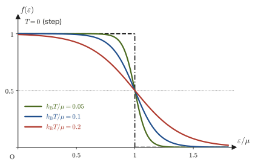
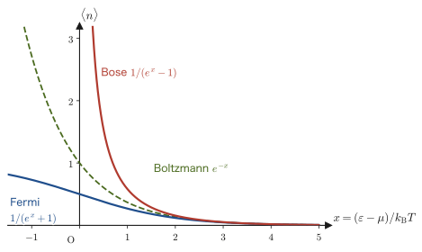
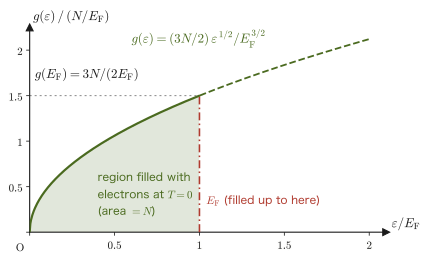
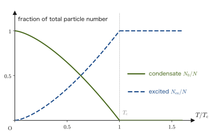

Chapter 52The Grand Canonical Distribution and Quantum Statistics — The Fermi and Bose Distributions
In the preceding chapters we have treated the canonical distribution—the setting in which the system of interest exchanges only energy with a heat bath, so that the number of particles $N$ is always fixed. In reality, however, there are many systems in which the particles themselves go in and out. For the conduction electrons in a metal, it is more natural to consider the average number of electrons entering and leaving than to fix how many of them are in a given volume. Between two solutions separated by a semipermeable membrane, substances diffuse. In this chapter we consider a system that is in contact not only with a heat bath but also with a particle reservoir (a store of particles), and we extend the canonical distribution to a form in which “the particle number also fluctuates.” This is the grand canonical distribution.
This extension naturally brings in a new quantity that does not appear in high school physics, the chemical potential $\mu$. Just as temperature is the quantity that determines “how readily energy flows in and out,” $\mu$ is the quantity that determines “how readily particles flow in and out” (particles flow from the side where $\mu$ is higher to the side where it is lower).
This distribution shows its true worth when we treat identical particles (particles of the same kind that cannot be told apart), such as electrons and photons. Identical particles divide into fermions, of which only one can occupy a single quantum state (electrons and the like; the Pauli exclusion principle), and bosons, of which any number can occupy a single state (photons, helium-4 atoms, and the like). From just one idea—“regard a single energy level as itself a small grand canonical system”—and without adding any new principle, we derive the Fermi–Dirac distribution and the Bose–Einstein distribution. The ideal gas, the electron configuration (at most two electrons in the K shell), and the specific heat of solids $3R$ that you learned in high school are tied together here: the reason why the specific heat of the electrons in a metal is much smaller than the classical value, and the Bose–Einstein condensation that occurs for bosons at extremely low temperatures, are the destinations of this chapter.
- Carry out the Taylor-expansion argument with the heat bath (Chapters 49 and 50) for the particle number as well, and derive the probability distribution of an open system, $P_{j,N}\propto e^{-\beta(E_j-\mu N)}$ (the grand canonical distribution)
- Define the grand partition function $\Xi$ and the grand potential $J=-k_{\mathrm B}T\ln\Xi=-pV$, and obtain from them a recipe for extracting macroscopic quantities such as the mean number of particles $\langle N\rangle$ and the pressure
- Understand the thermodynamic meaning of the chemical potential $\mu$ (the free energy needed to add one particle; the quantity that determines the direction in which particles flow) and its explicit form for the classical ideal gas, $\mu=k_{\mathrm B}T\ln(n\lambda_{\mathrm T}^3)$
- Understand the quantum-statistical distinction of identical particles into fermions and bosons (the Pauli exclusion principle is given as a result of quantum mechanics), and the idea of the occupation number
- From the idea that “one energy level is a tiny grand canonical system,” derive the Fermi–Dirac distribution $\langle n_\varepsilon\rangle=1/(e^{\beta(\varepsilon-\mu)}+1)$ and the Bose–Einstein distribution $\langle n_\varepsilon\rangle=1/(e^{\beta(\varepsilon-\mu)}-1)$, and confirm that in the high-temperature, low-density limit both reduce to the Boltzmann distribution
- By counting the standing waves of a particle confined in a box, derive the three-dimensional density of states $g(\varepsilon)\propto\sqrt\varepsilon$ and obtain the Fermi energy of a free electron gas, $E_{\mathrm F}=\dfrac{\hbar^2}{2m}(3\pi^2n)^{2/3}$ (about 7 eV for copper)
- Learn that the specific heat of a degenerate Fermi gas is proportional to the temperature (the result and its physical reason), and learn the transition temperature of Bose–Einstein condensation and examples of its realization (the λ point of liquid helium-4, and alkali-atom gases in 1995)
Source notes: This chapter supplements material not in the notes. Related notes: Yasuhide Mochizuki, Physics Notes: Statistical Mechanics (handwritten lecture notes, in Japanese), p. 9 (the defining equation of the canonical ensemble).
52.1 Open Systems and Derivation of the Grand Canonical Distribution
Let us begin with a concrete situation. In air at room temperature and $1\ \mathrm{atm}$, consider an invisible cube of side $1\ \mu\mathrm m$ (volume $10^{-18}\ \mathrm{m^3}$). It contains about $2.4\times10^{7}$ molecules on average, but since this cube has no walls, molecules are constantly entering and leaving, and the number fluctuates over a range of about $\pm5000$ ($0.02\,\%$) (Example 52.5). We want to treat such a “small region open to exchange” statistically, including the fluctuation of the number of molecules. The framework we are about to derive is obtained by reading the small region as the system of interest $s$ and all the surrounding air as a reservoir $R$ (Figure 52.1).
Recall the principle of equal a priori probability from Chapter 48 (in an isolated system, all allowed microstates occur with equal probability) and the discussion of “two systems in contact through a heat-conducting wall” from Section 49.4. There we saw that systems 1 and 2 exchange only heat (energy) while keeping the total energy $E=E_1+E_2$ fixed, and that the partition that maximizes the number of states of the composite system, $\Omega_{\mathrm{total}}(E_1)=\Omega_1(E_1)\Omega_2(E-E_1)$, accounts for an overwhelming majority of the microstates (that is, it is virtually certain to be realized). If we apply the same idea to the situation in which one system is overwhelmingly larger than the other—regarding the larger one as a heat bath (a huge reservoir that keeps its temperature $T$ and remains unaffected however much energy it hands to the small system)—we obtain the canonical distribution, in which the probability that the small system realizes one particular microstate $j$ of energy $E_j$ is proportional to the Boltzmann factor $e^{-\beta E_j}$ ($\beta\equiv1/(k_{\mathrm B}T)$) (Chapter 50).
In this section we push this argument one step further. What would happen if the heat bath could exchange not only energy but also particles with the system? We call such a huge reservoir, in contrast to the heat bath, a particle reservoir. In practice the heat bath and the particle reservoir may be one and the same large system (hereafter referred to collectively as the reservoir $R$), and $R$ is characterized by two quantities, the temperature $T$ and the chemical potential $\mu$ (whose meaning is explained in detail in Section 52.3). The small system of interest $s$, in contact with $R$, can exchange not only energy but also particles—its number of particles $N$ can come and go. This setup is shown in Figure 52.1.
The whole ($s+R$) is an isolated system, and the total energy $E_{\mathrm{tot}}$ and the total number of particles $N_{\mathrm{tot}}$ are constant. Suppose now that the system $s$ is in one particular microstate—with $N$ particles and energy $E_{j,N}$ (even for the same number of particles $N$, quantum mechanics allows many states, which we distinguish by the index $j$). Then the energy remaining in the reservoir $R$ is $E_{\mathrm{tot}}-E_{j,N}$, and its number of particles is $N_{\mathrm{tot}}-N$. By the principle of equal a priori probability (every microstate of the whole isolated system $s+R$ occurs with equal probability), the probability that the system $s$ realizes this specific state $(j,N)$ is proportional to the number of microstates $\Omega_R(E_{\mathrm{tot}}-E_{j,N},\,N_{\mathrm{tot}}-N)$ that $R$ can take with that energy and number of particles:
$$ P_{j,N}\propto\Omega_R(E_{\mathrm{tot}}-E_{j,N},\,N_{\mathrm{tot}}-N) $$Derivation: The grand canonical distribution $P_{j,N}\propto e^{-\beta(E_{j,N}-\mu N)}$
Since $R$ is far larger than $s$, we have $E_{j,N}\ll E_{\mathrm{tot}}$ and $N\ll N_{\mathrm{tot}}$. We therefore carry out a two-variable Taylor expansion of $\ln\Omega_R$ (University Mathematics, Section 6.6) about the state $(E_{\mathrm{tot}},N_{\mathrm{tot}})$ in which $R$ alone holds the total energy and the total number of particles. Terms up to first order give a sufficiently good approximation (the intuition from Section 49.4: the larger the reservoir, the more accurate this kind of approximation becomes):
$$ \ln\Omega_R(E_{\mathrm{tot}}-E_{j,N},\,N_{\mathrm{tot}}-N)\approx\ln\Omega_R(E_{\mathrm{tot}},N_{\mathrm{tot}})-E_{j,N}\left(\pdiff{\ln\Omega_R}{E}\right)_{N}-N\left(\pdiff{\ln\Omega_R}{N}\right)_{E} $$(Because $R$ lends energy $E_{j,N}$ and $N$ particles to the system $s$, the variables of $R$ itself decrease by $E_{j,N},N$, respectively—this is the meaning of the minus signs attached to the first-order terms. The partial derivatives are evaluated at the state $(E_{\mathrm{tot}},N_{\mathrm{tot}})$ of $R$ before the loan.) From the statistical definition of temperature $1/T=(\partial S/\partial E)_{V,N}$ in Definition 49.2 (since $S=k_{\mathrm B}\ln\Omega$, we have $\partial\ln\Omega_R/\partial E=(1/k_{\mathrm B})\partial S_R/\partial E$), the first partial derivative is
$$ \left(\pdiff{\ln\Omega_R}{E}\right)_{N}=\frac{1}{k_{\mathrm B}}\left(\pdiff{S_R}{E}\right)_{V,N}=\frac1{k_{\mathrm B}T}=\beta $$The second partial derivative is a quantity to which we have not yet given a name (it has already appeared in Definition 49.3 as the chemical potential seen from the number of microstates), so let us sort it out here. Solving the first law of thermodynamics for an open system (when rewritten in per-particle form in Section 26.7) $\dd U=T\dd S-p\dd V+\mu\,\dd N$ for $\dd S$, we obtain
$$ \dd S=\frac1T\dd U+\frac{p}{T}\dd V-\frac{\mu}{T}\dd N $$so, holding $U,V$ constant and differentiating partially with respect to $N$, we get $(\partial S/\partial N)_{U,V}=-\mu/T$. Therefore, the second partial derivative is
$$ \left(\pdiff{\ln\Omega_R}{N}\right)_{E}=\frac1{k_{\mathrm B}}\left(\pdiff{S_R}{N}\right)_{E,V}=-\frac{\mu}{k_{\mathrm B}T}=-\beta\mu $$This is the statistical-mechanical definition of the chemical potential $\mu$—a quantity that expresses “how much harder it becomes for the entropy to increase as the number of particles increases.” Substituting the two partial derivatives, we obtain
$$ \ln\Omega_R(E_{\mathrm{tot}}-E_{j,N},N_{\mathrm{tot}}-N)\approx\underbrace{\ln\Omega_R(E_{\mathrm{tot}},N_{\mathrm{tot}})}_{\text{constant (independent of $j,N$)}}-\beta E_{j,N}-N(-\beta\mu)=\text{constant}-\beta\bigl(E_{j,N}-\mu N\bigr) $$Taking the exponential of both sides gives $\Omega_R(E_{\mathrm{tot}}-E_{j,N},N_{\mathrm{tot}}-N)\propto e^{-\beta(E_{j,N}-\mu N)}$. Since this is proportional to $P_{j,N}$,
\begin{equation} P_{j,N}\propto e^{-\beta(E_{j,N}-\mu N)} \label{eq:52-gc-prob} \end{equation}∎
Intuition: A natural extension of the canonical distribution
Eq. \eqref{eq:52-gc-prob} has the form of the canonical distribution $P_j\propto e^{-\beta E_j}$ of Chapter 50 with just one extra term, $+\beta\mu N$, added to the exponent. Nothing new is being done: we merely replaced the “heat bath that can exchange only energy” with a “reservoir that can exchange both energy and particles,” and increased the variables of the Taylor expansion from $E$ alone to $N$ as well. The term $-\beta E_{j,N}$ in the exponent says that “the higher the energy of a state, the harder it is to realize,” and the newly added term $+\beta\mu N$ says that “when the chemical potential $\mu$ is high, states with a larger number of particles $N$ become easier to realize (the reverse holds when $\mu$ is low, or negative).” In the next section we will normalize this distribution properly and build a framework for extracting macroscopic quantities such as the pressure and the mean number of particles from it.
Example 52.1: Grand canonical distribution of an adsorption site (a miniature of Langmuir adsorption)
Suppose a solid surface has a single small “adsorption site” that can adsorb just one gas molecule. When the site is empty, the energy is $0$ and the number of particles is $N=0$. When one molecule is adsorbed at the site, the energy is $-\varepsilon_0$ ($\varepsilon_0\gt0$; the system is stabilized by adsorption, so the energy is negative) and the number of particles is $N=1$. Regard this site as a grand canonical system in contact with a gas (the supply source of the molecules to be adsorbed) at temperature $T$ and chemical potential $\mu$. (1) Find the ratio between the probability $P_{\text{empty}}$ that the site is empty and the probability $P_{\text{adsorbed}}$ that a molecule is adsorbed. (2) When $\mu$ is very large (the gas pressure is very high), which probability becomes larger? Read the answer off from the expression.
Solution. (1) Apply Eq. \eqref{eq:52-gc-prob} to the two states $(j,N)=(\text{empty},0)$ and $(j,N)=(\text{adsorbed},1)$. The empty state has $E_{j,N}=0,N=0$, so $P_{\text{empty}}\propto e^{-\beta(0-\mu\cdot0)}=e^{0}=1$. The adsorbed state has $E_{j,N}=-\varepsilon_0,N=1$, so $P_{\text{adsorbed}}\propto e^{-\beta(-\varepsilon_0-\mu\cdot1)}=e^{\beta(\varepsilon_0+\mu)}$. Therefore,
$$ \frac{P_{\text{adsorbed}}}{P_{\text{empty}}}=e^{\beta(\varepsilon_0+\mu)}=e^{(\varepsilon_0+\mu)/(k_{\mathrm B}T)} $$(2) The larger $\mu$ is (the higher the pressure and density of the gas; as we will see in Section 52.3, $\mu$ increases with them), the larger the exponent $\beta(\varepsilon_0+\mu)$ becomes, and $P_{\text{adsorbed}}/P_{\text{empty}}\to\infty$: the site is almost certainly filled by a molecule. Conversely, for $\mu\to-\infty$ (an extremely dilute gas) the ratio approaches $0$, and the site is almost certainly empty. This agrees perfectly with intuition (the higher the gas pressure, the more adsorption onto the surface proceeds), and it is the first concrete example showing that $\mu$ is a quantity that expresses “how easily particles can be pushed in.” (You will later notice that the statistics of this adsorption site is none other than the one-level version of the Fermi–Dirac distribution that we derive in Section 52.5.)
52.2 The Grand Partition Function $\Xi$ and the Grand Potential
To turn the proportionality of Eq. \eqref{eq:52-gc-prob} into an equality, we need a constant that normalizes it so that the total probability is 1. By analogy with the partition function $Z=\sum_je^{-\beta E_j}$ of the canonical distribution (Chapter 50), we introduce the quantity obtained by summing over all values of the number of particles $N$ and, for each $N$, over all states $j$.
Definition 52.1: Grand partition function $\Xi$
\begin{equation} \Xi(T,V,\mu)\equiv\sum_{N=0}^{\infty}\sum_j e^{-\beta(E_{j,N}-\mu N)} \label{eq:52-Xi-def} \end{equation}is called the grand partition function ($\Xi$ is the Greek capital letter xi, read “ksai” or “gzai” in Japanese). Using it, Eq. \eqref{eq:52-gc-prob} becomes the equality $P_{j,N}=e^{-\beta(E_{j,N}-\mu N)}/\Xi$ (that it satisfies $\sum_{N,j}P_{j,N}=1$ can be checked directly from the definition of $\Xi$ itself).
Within the sum over $N$ in Eq. \eqref{eq:52-Xi-def}, the sum over $j$ for a fixed $N$, $\sum_je^{-\beta E_{j,N}}$, is nothing other than “the canonical partition function with the number of particles fixed at exactly $N$,” $Z_N(T,V)\equiv\sum_je^{-\beta E_{j,N}}$ (the $Z$ of Chapter 50, written with the number of particles $N$ made explicit). Therefore, we can rewrite it as
\begin{equation} \Xi=\sum_{N=0}^{\infty}e^{\beta\mu N}Z_N(T,V) \label{eq:52-Xi-ZN} \end{equation}We often use the abbreviation $z\equiv e^{\beta\mu}$ (the fugacity, also called the activity) and write simply $\Xi=\sum_N z^NZ_N$ ($z$ is just $\mu$ rewritten in exponential form and does not represent any new physics).
52.2.1 Mean number of particles and the grand partition function
The partial derivative of $\Xi$ with respect to $\mu$ can be computed directly, because the contents of the sum may be differentiated term by term (term-by-term differentiation of an infinite series, which is justified within the range where it converges).
Derivation: $\langle N\rangle=k_{\mathrm B}T\left(\pdiff{\ln\Xi}{\mu}\right)_{T,V}$
Differentiating the right-hand side of Eq. \eqref{eq:52-Xi-def} partially with respect to $\mu$ (holding $T,V$ fixed), the differentiation formula for the exponential function brings down a factor $\beta N$ in each term:
$$ \left(\pdiff{\Xi}{\mu}\right)_{T,V}=\sum_{N,j}\beta N\,e^{-\beta(E_{j,N}-\mu N)} $$Dividing both sides by $\Xi$, the right-hand side becomes $\beta\sum_{N,j}N\,P_{j,N}=\beta\langle N\rangle$ (the very definition of the mean number of particles). The left-hand side is $(1/\Xi)(\partial\Xi/\partial\mu)=\partial\ln\Xi/\partial\mu$ (differentiation of a composite function, with $\dd(\ln\Xi)/\dd\Xi=1/\Xi$). Therefore,
$$ \left(\pdiff{\ln\Xi}{\mu}\right)_{T,V}=\beta\langle N\rangle \qquad\Longrightarrow\qquad \langle N\rangle=\frac1\beta\left(\pdiff{\ln\Xi}{\mu}\right)_{T,V}=k_{\mathrm B}T\left(\pdiff{\ln\Xi}{\mu}\right)_{T,V} $$∎
This relation is built on exactly the same idea as $U=-\partial\ln Z/\partial\beta$ in the canonical distribution (Chapter 50, a recipe for extracting macroscopic quantities by differentiating a logarithm)—merely differentiating a logarithm gives us the average value of a statistically fluctuating quantity. Below, we write $\langle N\rangle$ simply as $N$ (just as $U$ in Chapter 51 was actually $\langle E\rangle$; this is because in the thermodynamic limit the relative fluctuations are so small as to be negligible).
52.2.2 The grand potential $J$
Just as we defined the free energy $A=-k_{\mathrm B}T\ln Z$ in the canonical distribution, we define a new thermodynamic potential from the logarithm of $\Xi$.
Definition 52.2: Grand potential $J$
\begin{equation} J(T,V,\mu)\equiv-k_{\mathrm B}T\ln\Xi \label{eq:52-J-def} \end{equation}is called the grand potential (some textbooks write it with a capital omega $\Omega$ or as $\Phi_{\mathrm G}$, but in this book, to avoid a clash of symbols with the thermodynamic weight $\Omega(E)$ (Chapter 49), we use $J$). Rewriting the result of the previous subsection, we obtain
\begin{equation} N=-\left(\pdiff{J}{\mu}\right)_{T,V} \label{eq:52-N-from-J} \end{equation}(substitute $\ln\Xi=-J/(k_{\mathrm B}T)$ and note that $-k_{\mathrm B}T\times\dfrac1{k_{\mathrm B}T}=-1$).
Let us see how $J$ is related to $A$ and $pV$. Using the canonical partition function $Z_N=e^{-\beta A(T,V,N)}$ (this is just the definition of $A$), the sum in Eq. \eqref{eq:52-Xi-ZN} can be written as $\Xi=\sum_Ne^{\beta\mu N}e^{-\beta A(T,V,N)}=\sum_Ne^{-\beta[A(T,V,N)-\mu N]}$. For exactly the same reason as in the argument of Section 49.4 that “an overwhelming majority of the states concentrate at a single point” (in a macroscopic system of $N\sim10^{23}$ particles, the exponent $A(T,V,N)-\mu N$ is minimized at a single value $N=N^*$, and this sum too is dominated by contributions from the very narrow range around it), the sum can be approximated by its largest term alone:
$$ \Xi\approx e^{-\beta[A(T,V,N^*)-\mu N^*]} \qquad\Longrightarrow\qquad J=-k_{\mathrm B}T\ln\Xi\approx A(T,V,N^*)-\mu N^* $$(Since there are at most $\sim N$ terms, the effect of the deviation from the largest term is only of order $\ln N$ even after taking the logarithm, which is negligible compared with the size of the exponent, $\sim N$. The $N^*$ that gives the maximum is determined in Section 52.3.1 (the condition $\partial A/\partial N=\mu$).)
That is, $J=A-\mu N$ (with $N$ the mean number of particles). This is one example of the Legendre transformation studied in Section 31.5. Just as $A=U-TS$ is the transformation that “replaces the variable $S$ of $U(S,V,N)$ with its conjugate quantity $T$,” $J=A-\mu N$ is the transformation that “replaces the variable $N$ of $A(T,V,N)$ with its conjugate quantity $\mu$” (the common form is that we subtract the product of a natural variable and its conjugate quantity).
Derivation: $J=-pV$ — the grand potential is proportional to the extensive variable $V$ alone
Using $\dd A=-S\dd T-p\dd V+\mu\dd N$ (the form obtained by adding to $\dd A=-S\dd T-p\dd V$ of Chapter 30 the term $\mu\dd N$ for an open system from Section 26.7.1; the derivation is given in the next section) and taking the total differential of $J=A-\mu N$, we obtain
$$ \dd J=\dd A-\mu\dd N-N\dd\mu=(-S\dd T-p\dd V+\mu\dd N)-\mu\dd N-N\dd\mu=-S\dd T-p\dd V-N\dd\mu $$That is, the natural variables of $J$ are $(T,V,\mu)$, and $p=-(\partial J/\partial V)_{T,\mu}$ holds. Here, recall that $T,\mu$ are both intensive variables (quantities whose values do not change when two systems are combined), whereas $V$ is an extensive variable (a quantity that doubles when two systems are combined). Consider a system of the same substance, with the same $T,\mu$, but with the volume alone multiplied by $\lambda$ ($\lambda>0$); by extensivity, $J$ should also be multiplied by $\lambda$:
$$ J(T,\lambda V,\mu)=\lambda J(T,V,\mu)\qquad(\text{for all}\ \lambda>0\ \text{}) $$This means that $J$ is a homogeneous function of degree one in $V$. Differentiating both sides with respect to $\lambda$ and substituting $\lambda=1$ (the left-hand side is the derivative of a composite function and, by the chain rule, becomes $V\times(\partial J/\partial V)_{T,\mu}$), we obtain
$$ V\left(\pdiff{J}{V}\right)_{T,\mu}=J(T,V,\mu) $$Substituting the result $(\partial J/\partial V)_{T,\mu}=-p$ found a moment ago, we get
\begin{equation} J=-pV \label{eq:52-J-pV} \end{equation}∎
Theorem 52.1: Grand partition function and grand potential
For the grand partition function $\Xi=\sum_{N,j}e^{-\beta(E_{j,N}-\mu N)}$, the grand potential $J=-k_{\mathrm B}T\ln\Xi$ defined from it satisfies the following relations.
\begin{equation} J=-k_{\mathrm B}T\ln\Xi=A-\mu N=-pV, \qquad N=k_{\mathrm B}T\left(\pdiff{\ln\Xi}{\mu}\right)_{T,V}, \qquad p=-\left(\pdiff{J}{V}\right)_{T,\mu} \label{eq:52-thm-J} \end{equation}These three equations are the starting point of all the calculations in the rest of this chapter—once $\Xi$ can be computed, everything from the mean number of particles and the pressure to (by taking one more logarithmic derivative) the mean energy can be extracted mechanically.
Caution: The condition for $J=-pV$ to hold
$J=-pV$ was derived using the extensivity, that is, the fact that $J$ is proportional to the volume $V$. Therefore it holds only for a sufficiently large, uniform system in which the effects of the container walls and interfaces are negligible (the thermodynamic limit). For systems in which surface contributions cannot be neglected, such as nanoparticles or thin films, a surface term is added to $J$ and $J=-pV$ breaks down. Also, using $J=-pV$ gives us a convenient formula: once $\Xi$ can be computed, the equation of state $p=k_{\mathrm B}T\ln\Xi/V$ is obtained in one step (we actually use it in the next example and in Section 52.3).
Example 52.2: Grand partition function of a classical ideal gas
Using the single-particle partition function of the monatomic ideal gas found in Section 51.1, $Z_1=V(2\pi mk_{\mathrm B}T/h^2)^{3/2}=V/\lambda_{\mathrm T}^3$ ($\lambda_{\mathrm T}$ is the thermal de Broglie wavelength), and the $N$-particle partition function $Z_N=Z_1^N/N!$ (same chapter), find the grand partition function $\Xi$ of the classical ideal gas.
Solution. Substituting $Z_N=Z_1^N/N!$ into Eq. \eqref{eq:52-Xi-ZN} (the form using the fugacity $z=e^{\beta\mu}$), we obtain
$$ \Xi=\sum_{N=0}^{\infty}z^N\frac{Z_1^N}{N!}=\sum_{N=0}^{\infty}\frac{(zZ_1)^N}{N!} $$This is exactly the Taylor expansion (Maclaurin expansion) of the exponential function, $e^x=\sum_{N=0}^{\infty}x^N/N!$ (University Mathematics, Chapter 4), with $x=zZ_1$. Therefore,
\begin{equation} \Xi_{\text{ideal gas}}=e^{zZ_1}=\exp\bigl(e^{\beta\mu}Z_1\bigr) \label{eq:52-Xi-idealgas} \end{equation}so the grand partition function is obtained in a neat closed form (a single exponential function rather than an infinite series). Using this, from Eq. \eqref{eq:52-thm-J} we get $N=k_{\mathrm B}T\,\partial\ln\Xi/\partial\mu=k_{\mathrm B}T\cdot\beta zZ_1=zZ_1=e^{\beta\mu}Z_1$ (we used the fact that, when $\ln\Xi=zZ_1$ is differentiated with respect to $\mu$, the derivative of $z=e^{\beta\mu}$, $\partial z/\partial\mu=\beta z$, gives $\partial(zZ_1)/\partial\mu=\beta zZ_1$). We use this relation $N=e^{\beta\mu}Z_1$ in the next section to find the explicit form of the chemical potential.
52.3 The Meaning of the Chemical Potential $\mu$
So far we have introduced $\mu$ as “the derivative of the entropy with respect to the particle number, $-\mu/T=(\partial S/\partial N)_{U,V}$.” However, entropy is a rather awkward quantity to handle, so let us understand $\mu$ in a more tangible form. The starting point is $J=A-\mu N$, obtained in the previous section.
52.3.1 $\mu=(\partial A/\partial N)_{T,V}$ — the free energy needed to add one particle
In Section 52.2 we saw that the sum $\Xi=\sum_Ne^{-\beta[A(T,V,N)-\mu N]}$ is dominated by the terms near $N=N^*$, where the exponent $A(T,V,N)-\mu N$ is smallest. The condition for the function $A(T,V,N)-\mu N$ to be minimal at $N^*$ is to differentiate it partially with respect to $N$ and set the result equal to $0$, that is, $(\partial A/\partial N)_{T,V}-\mu=0$ (the condition for an extremum, University Mathematics, Section 6.2). This is precisely the thermodynamic definition of the chemical potential.
Definition 52.3: Chemical potential $\mu$ (thermodynamic definition)
\begin{equation} \mu\equiv\left(\pdiff{A}{N}\right)_{T,V}=\left(\pdiff{U}{N}\right)_{S,V}=\left(\pdiff{G}{N}\right)_{T,p}=-T\left(\pdiff{S}{N}\right)_{U,V} \label{eq:52-mu-def} \end{equation}The increase in the Helmholtz free energy $A$ when exactly one particle is added while the temperature $T$ and the volume $V$ are held constant. Since $N$ here is the number of particles, the unit of $\mu$ is $\mathrm J$, the energy per particle (if we count by the amount of substance $n\ [\mathrm{mol}]$ as in Section 26.7.1, then $\mu\ [\mathrm{J/mol}]$ results, and the two differ by a factor of $N_{\mathrm A}$).
Derivation: The four expressions in Definition 52.3 are the same quantity
We start from $\dd U=T\dd S-p\dd V+\mu\dd N$ (Section 26.7.1). Differentiating partially with respect to $N$ with $S,V$ held constant gives $(\partial U/\partial N)_{S,V}=\mu$. Next, the total differential of $A=U-TS$ (by the product rule) is
$$ \dd A=\dd U-T\dd S-S\dd T=(T\dd S-p\dd V+\mu\dd N)-T\dd S-S\dd T=-S\dd T-p\dd V+\mu\dd N $$so differentiating partially with respect to $N$ with $T,V$ held constant gives $(\partial A/\partial N)_{T,V}=\mu$. In the same way, from $G=U-TS+pV$ we obtain $\dd G=-S\dd T+V\dd p+\mu\dd N$, and hence $(\partial G/\partial N)_{T,p}=\mu$. Finally, as we obtained in the previous section from $\dd S=\dfrac1T\dd U+\dfrac pT\dd V-\dfrac\mu T\dd N$, we have $(\partial S/\partial N)_{U,V}=-\mu/T$, that is, $\mu=-T(\partial S/\partial N)_{U,V}$. The expressions look different depending on which quantities are held fixed while one particle is added, but they all give the same $\mu$.
∎
Derivation: Euler's relation $U=TS-pV+\mu N$, and an alternative proof of $J=-pV$
All three variables of the internal energy $U(S,V,N)$ are extensive variables, so if $S,V,N$ are simultaneously multiplied by $\lambda$, then $U$ is also multiplied by $\lambda$ (it is homogeneous of degree one). Differentiating with respect to $\lambda$ and then setting $\lambda=1$, just as in the derivation of $J=-pV$ in Section 52.2, we obtain
$$ U=S\left(\pdiff US\right)_{V,N}+V\left(\pdiff UV\right)_{S,N}+N\left(\pdiff UN\right)_{S,V}=TS-pV+\mu N $$From this, $G=U-TS+pV=\mu N$; that is, for a one-component system, $\mu$ is the Gibbs energy (Gibbs free energy) per particle ($\mu=G/N$). Furthermore, $J=A-\mu N=U-TS-\mu N=-pV$, which agrees with the result of Section 52.2.
∎
52.3.2 Particles flow from higher to lower $\mu$
The same structure that holds for heat flowing from hot to cold, and for positive charge flowing from high to low electric potential, also holds for particles. Connect two containers 1 and 2 at the same temperature $T$ with a thin tube through which particles can pass (Figure 52.2). The whole system is immersed in a heat bath at temperature $T$, and the volume $V$ and the total number of particles $N_1+N_2$ are held constant. Then the Helmholtz free energy of the whole, $A=A_1+A_2$, can only decrease under spontaneous change (Section 30.4: the direction of change at constant $T,V$). When $\dd N_1$ particles move from container 1 to container 2, $\dd N_2=-\dd N_1$, so by Definition 52.3
$$ \dd A=\mu_1\dd N_1+\mu_2\dd N_2=(\mu_1-\mu_2)\dd N_1\le0 $$holds. If $\mu_1\gt\mu_2$, then $\dd N_1\lt0$ (the particles in container 1 decrease); that is, particles flow from the higher chemical potential to the lower, and the flow stops when $\mu_1=\mu_2$ is reached (equilibrium).
“Temperature for energy, chemical potential for particles”
When two systems can exchange something, that quantity flows until the intensive variables corresponding to the exchanged quantity become equal. Summarizing the examples we have learned so far gives the following table.
| Exchanged quantity | Quantity that becomes equal at equilibrium | Direction of flow |
|---|---|---|
| Energy (heat) | Temperature $T$ | High temperature → low temperature |
| Volume (motion of the wall) | Pressure $p$ | The high-pressure side expands |
| Charge | Electric potential $\varphi$ | High potential → low potential (positive charge) |
| Particles | Chemical potential $\mu$ | High $\mu$ → low $\mu$ |
This is a restatement of the “partition that maximizes the entropy” seen in Section 49.4 and Section 49.5 ($T$ becomes equal under energy exchange, $p$ under volume exchange, and $\mu$ under particle exchange).
52.3.3 The chemical potential of a classical ideal gas
In Example 52.2 we found the grand partition function $\Xi=\exp(zZ_1)$ and the mean number of particles $N=zZ_1$ of a monatomic ideal gas. Using $Z_1=V/\lambda_{\mathrm T}^3$ (Section 51.1) and introducing the number density $n\equiv N/V$, we obtain from $N=e^{\beta\mu}V/\lambda_{\mathrm T}^3$
$$ e^{\beta\mu}=\frac{N\lambda_{\mathrm T}^3}{V}=n\lambda_{\mathrm T}^3 $$Taking the logarithm of both sides and multiplying by $k_{\mathrm B}T$ gives the chemical potential.
Formula 52.1: The chemical potential of a classical ideal gas
\begin{equation} \mu=k_{\mathrm B}T\ln\bigl(n\lambda_{\mathrm T}^3\bigr),\qquad \lambda_{\mathrm T}=\frac{h}{\sqrt{2\pi mk_{\mathrm B}T}},\qquad n=\frac NV=\frac p{k_{\mathrm B}T} \label{eq:52-mu-ideal} \end{equation}The fugacity $z=e^{\beta\mu}$ is $z=n\lambda_{\mathrm T}^3$, and it expresses “how many particles there are on average per cube of side $\lambda_{\mathrm T}$.”
This is exactly the same expression as $\mu=-k_{\mathrm B}T\ln\left\{\dfrac VN\left(\dfrac{2\pi mk_{\mathrm B}T}{h^2}\right)^{3/2}\right\}$, which we obtained in Section 49.6 from the partial derivative of the Sackur–Tetrode equation (and which we also obtained from $A$ in Theorem 51.2 of Section 51.1), because $\dfrac VN=\dfrac1n$ and $\left(\dfrac{2\pi mk_{\mathrm B}T}{h^2}\right)^{3/2}=\dfrac1{\lambda_{\mathrm T}^3}$, so taking the reciprocal of the argument of the logarithm reverses the sign. Whether we start from the microcanonical distribution (constant energy) or from the grand canonical distribution (constant $\mu$), we obtain the same $\mu$—this is one manifestation of the equivalence of the distributions in the thermodynamic limit.
Intuition: Why is $\mu$ negative, and why does it increase with the density?
When $n\lambda_{\mathrm T}^3$, the argument of the logarithm in Eq. \eqref{eq:52-mu-ideal}, is smaller than $1$ (the quantum-mechanical extent $\lambda_{\mathrm T}$ of a molecule is shorter than the distance between molecules, so the gas can be treated classically), $\mu$ is negative. In the language of Definition 49.3, this is a manifestation of the fact that “adding one molecule increases the entropy ($-\mu/T=(\partial S/\partial N)_{U,V}\gt0$).” A dilute gas has plenty of room left for one molecule to move around, so adding one costs no extra effort. As the gas becomes denser ($n$ increases), the room shrinks and the cost of adding one molecule increases—that is, $\mu$ rises. That $\mu$ is negative does not mean that the particles “lose out in the energy sense”; it means that “each particle has ample room to move freely.” In a vacuum ($n\to0$), $\mu\to-\infty$, which corresponds to a state in which “particles can enter very easily.”
Caution: In an isothermal process, $\mu$ is related to $p$ logarithmically
Substituting $n=p/(k_{\mathrm B}T)$ into Eq. \eqref{eq:52-mu-ideal} and comparing two states at the same temperature, we obtain $\mu_2-\mu_1=k_{\mathrm B}T\ln(p_2/p_1)$ ($\lambda_{\mathrm T}$ depends only on the temperature, so it cancels). Doubling the pressure does not double $\mu$; it raises it by only $k_{\mathrm B}T\ln2$. In chemistry textbooks, one uses the value $\mu^\circ(T)$ at a reference pressure $p^\circ$ (for example, $1\ \mathrm{bar}$) and writes $\mu=\mu^\circ(T)+k_{\mathrm B}T\ln(p/p^\circ)$ (or $RT\ln(p/p^\circ)$ if $\mu$ is measured in $\mathrm{J/mol}$).
Example 52.3: When does $\mu=0$ for nitrogen gas? — the limit of the classical ideal gas formula
Consider a gas of nitrogen molecules $\mathrm N_2$ (mass $m=28.0134\times1.6605\times10^{-27}\ \mathrm{kg}=4.652\times10^{-26}\ \mathrm{kg}$) at $T=300\ \mathrm K$ and $p=1\ \mathrm{atm}=101\,325\ \mathrm{Pa}$. If we consider only translational motion, then $n=p/(k_{\mathrm B}T)=2.446\times10^{25}\ \mathrm{m^{-3}}$ and $\lambda_{\mathrm T}=1.904\times10^{-11}\ \mathrm m$, and $\mu$ from Eq. \eqref{eq:52-mu-ideal} is $-0.403\ \mathrm{eV}$ ($-15.6\,k_{\mathrm B}T$) (this value agrees with the one obtained from the Sackur–Tetrode equation in Section 49.6). For this gas: (1) At what pressure, in $\mathrm{atm}$, does $\mu=0$ ($n\lambda_{\mathrm T}^3=1$) hold if the pressure is raised while $T=300\ \mathrm K$ is kept? (2) At what temperature, in $\mathrm K$, does $\mu=0$ hold if the gas is cooled while $p=1\ \mathrm{atm}$ is kept? (3) Find $n\lambda_{\mathrm T}^3$ at the boiling point of nitrogen, $77\ \mathrm K$, and consider why the classical ideal gas formula ceases to be usable.
Solution. First, at $T=300\ \mathrm K$ and $1\ \mathrm{atm}$, $z=n\lambda_{\mathrm T}^3=2.446\times10^{25}\times(1.904\times10^{-11})^3=1.69\times10^{-7}$.
(1) The number density at which $n\lambda_{\mathrm T}^3=1$ is $n=1/\lambda_{\mathrm T}^3=1/(1.904\times10^{-11}\ \mathrm m)^3=1.45\times10^{32}\ \mathrm{m^{-3}}$. The pressure is $p=nk_{\mathrm B}T=1.45\times10^{32}\times4.142\times10^{-21}\ \mathrm{Pa}=6.0\times10^{11}\ \mathrm{Pa}$, that is, about $5.9\times10^{6}\ \mathrm{atm}$ (about $600$ × 10,000 = six million times $1\ \mathrm{atm}$).
(2) At constant $p$, $n=p/(k_{\mathrm B}T)\propto T^{-1}$ and $\lambda_{\mathrm T}^3\propto T^{-3/2}$, so $z=n\lambda_{\mathrm T}^3\propto T^{-5/2}$. Solving $z=1.69\times10^{-7}\,(T/300\ \mathrm K)^{-5/2}=1$ gives $T=300\ \mathrm K\times(1.69\times10^{-7})^{2/5}=0.59\ \mathrm K$.
(3) At $T=77\ \mathrm K$ ($1\ \mathrm{atm}$), $z=1.69\times10^{-7}\times(77/300)^{-5/2}\approx5\times10^{-6}$, which is far smaller than $1$. That is, nitrogen liquefies because of intermolecular forces long before $\mu=0$ is approached, while the quantum-mechanical extent $\lambda_{\mathrm T}\approx3.8\times10^{-11}\ \mathrm m$ is still far shorter than the intermolecular spacing $(k_{\mathrm B}T/p)^{1/3}\approx2.2\times10^{-9}\ \mathrm m$. The reason the classical ideal gas formula cannot be used for nitrogen gas is not quantum effects but intermolecular forces; quantum effects ($n\lambda_{\mathrm T}^3\sim1$) become essential for helium, which is light and has weak intermolecular forces, and for particles of small mass such as electrons (Section 52.7).
Caution. Here we ignored the internal motion of the molecule (rotation and vibration) and the binding energy, and considered the chemical potential of translational motion only. For a diatomic molecule, the translational $Z_1=V/\lambda_{\mathrm T}^3$ is multiplied by the internal partition function $z_{\mathrm{int}}$, so $\mu=k_{\mathrm B}T\ln(n\lambda_{\mathrm T}^3/z_{\mathrm{int}})$. For the rotation of $\mathrm N_2$ at room temperature, $z_{\mathrm{rot}}=T/(2\theta_{\mathrm{rot}})\approx50$ (the rotational temperature is $\theta_{\mathrm{rot}}=2.88\ \mathrm K$, and the factor 2 is the symmetry number of a molecule whose two atoms are identical), so $\mu$ is lowered further by $k_{\mathrm B}T\ln50\approx0.10\ \mathrm{eV}$. Also, the value of $\mu$ itself depends on the choice of the origin of energy (whether or not the binding energy is included).
Example 52.4: Re-deriving the equation of state of an ideal gas from $J=-pV$
Starting from the grand partition function of the ideal gas $\Xi=\exp(zZ_1)$ (Eq. \eqref{eq:52-Xi-idealgas}) and $Z_1=V/\lambda_{\mathrm T}^3$, derive the equation of state $pV=Nk_{\mathrm B}T$ from each of $p=-(\partial J/\partial V)_{T,\mu}$ and $J=-pV$.
Solution. Since $\ln\Xi=zZ_1=e^{\beta\mu}V/\lambda_{\mathrm T}^3$, we have $J=-k_{\mathrm B}T\ln\Xi=-k_{\mathrm B}T\,e^{\beta\mu}V/\lambda_{\mathrm T}^3$. When $T,\mu$ are fixed, both $\lambda_{\mathrm T}$ and $e^{\beta\mu}$ are constants, so $J$ is proportional to $V$. Therefore
$$ p=-\left(\pdiff JV\right)_{T,\mu}=\frac{k_{\mathrm B}T\,e^{\beta\mu}}{\lambda_{\mathrm T}^3} $$On the other hand, the mean number of particles is $N=zZ_1=e^{\beta\mu}V/\lambda_{\mathrm T}^3$, so $e^{\beta\mu}/\lambda_{\mathrm T}^3=N/V$. Substituting this into $p$ gives $p=k_{\mathrm B}T\,N/V$, that is, $pV=Nk_{\mathrm B}T$. As another route, from $J=-pV$ we have $pV=-J=k_{\mathrm B}T\ln\Xi=k_{\mathrm B}T\,zZ_1=k_{\mathrm B}T\,N$, which gives the same equation directly. By either route, the equation of state of high school physics has been reproduced (by a route different from the derivation from the canonical distribution in Chapter 51).
52.3.4 Fluctuations in the number of particles — why may we write $\langle N\rangle$ as $N$?
In the grand canonical distribution, the number of particles $N$ varies probabilistically. Let us check why we may nevertheless treat $N$ as a fixed value.
Derivation: $\langle(\Delta N)^2\rangle=k_{\mathrm B}T\,(\partial\langle N\rangle/\partial\mu)_{T,V}$
We differentiate $\langle N\rangle=\sum_{N,j}N\,e^{-\beta(E_{j,N}-\mu N)}/\Xi$ partially with respect to $\mu$. By the quotient rule, from the term in which the derivative of the numerator, $\sum\beta N^2e^{-\beta(E-\mu N)}$, is divided by $\Xi$, we subtract the term that comes from the derivative of the denominator, $\partial\Xi/\partial\mu=\beta\langle N\rangle\Xi$, and obtain
$$ \pdiff{\langle N\rangle}{\mu}=\beta\langle N^2\rangle-\beta\langle N\rangle^2=\beta\,\langle(\Delta N)^2\rangle,\qquad\langle(\Delta N)^2\rangle\equiv\langle N^2\rangle-\langle N\rangle^2 $$that is, $\langle(\Delta N)^2\rangle=k_{\mathrm B}T\,(\partial\langle N\rangle/\partial\mu)_{T,V}$ (the same structure as the energy fluctuation $\langle(\Delta E)^2\rangle=k_{\mathrm B}T^2C_V$ in Section 50.5).
∎
For an ideal gas, $\langle N\rangle=e^{\beta\mu}Z_1$, so $\partial\langle N\rangle/\partial\mu=\beta\langle N\rangle$; therefore $\langle(\Delta N)^2\rangle=\langle N\rangle$, and the relative fluctuation is $\sqrt{\langle(\Delta N)^2\rangle}/\langle N\rangle=1/\sqrt{\langle N\rangle}$. For a gas of $1\ \mathrm{mol}$ ($N\approx6\times10^{23}$), this is only $1.3\times10^{-12}$, which cannot be observed at all in experiments. For this reason, in the thermodynamic limit we may simply write $\langle N\rangle$ as $N$, and the grand canonical distribution and the canonical distribution give the same thermodynamics.
Example 52.5: The particle-number distribution of an ideal gas is a Poisson distribution
For a subsystem of an ideal gas (grand partition function $\Xi=e^{zZ_1}$), find the probability $P(N)$ that the number of particles is exactly $N$, and verify $\langle N\rangle$ and $\langle(\Delta N)^2\rangle$. Also find the relative fluctuation of the number of molecules contained in a $1\ \mu\mathrm m^3$ region of air at $300\ \mathrm K$ and $1\ \mathrm{atm}$.
Solution. Adding up the probabilities of all the states with $N$ particles gives $P(N)=\sum_je^{-\beta(E_{j,N}-\mu N)}/\Xi=z^NZ_N/\Xi$. Using $Z_N=Z_1^N/N!$ and $\Xi=e^{zZ_1}$, we have
$$ P(N)=\frac{(zZ_1)^N}{N!}e^{-zZ_1}=\frac{\bar N^N}{N!}e^{-\bar N},\qquad\bar N\equiv zZ_1=\langle N\rangle $$This is the Poisson distribution. We have $\sum_NP(N)=e^{-\bar N}\sum_N\bar N^N/N!=e^{-\bar N}e^{\bar N}=1$, so it is normalized. The mean is $\sum_NNP(N)=\bar N$, and the variance is $\langle N^2\rangle-\bar N^2=\bar N$ (using $\langle N(N-1)\rangle=\bar N^2$). This agrees with $\langle(\Delta N)^2\rangle=\langle N\rangle$ found above. A volume of air of $1\ \mu\mathrm m^3=10^{-18}\ \mathrm m^3$ contains, from $n=2.446\times10^{25}\ \mathrm{m^{-3}}$ of Example 52.3, $\bar N=2.4\times10^7$ molecules, and the relative fluctuation is $1/\sqrt{\bar N}=2.0\times10^{-4}$ ($0.02\,\%$).
Example 52.6: Hydrogen across a semipermeable membrane — what is equal when $\mu$ is equal?
A thin film of palladium (Pd) can be used as a semipermeable membrane that passes only hydrogen $\mathrm H_2$ and does not pass nitrogen $\mathrm N_2$. On the left side of the membrane is pure hydrogen at a pressure of $2.0\ \mathrm{atm}$; on the right side is a mixture of hydrogen and nitrogen (total pressure $3.0\ \mathrm{atm}$); the temperature is the same on both sides. After enough time has passed for the flow of hydrogen to stop, what are the partial pressures of hydrogen and nitrogen on the right side? Treat the gases as ideal gases.
Solution. Since only hydrogen can pass through the membrane, the equilibrium condition is that the chemical potential of hydrogen is equal on the two sides, $\mu_{\mathrm H_2}^{\text{left}}=\mu_{\mathrm H_2}^{\text{right}}$ (nitrogen does not pass through the membrane, so there is no need to equalize $\mu$ for nitrogen). The chemical potential of hydrogen in an ideal gas (even in a mixture, each component behaves independently of the other components, because the molecules exert no forces on one another) is determined by the partial pressure $p_{\mathrm H_2}$ of that component: $\mu_{\mathrm H_2}=\mu^\circ(T)+k_{\mathrm B}T\ln(p_{\mathrm H_2}/p^\circ)$. Since $\mu^\circ(T)$ is common to the two sides, equal $\mu$ is equivalent to equal partial pressures of hydrogen. Therefore the partial pressure of hydrogen on the right side is the same as on the left, $2.0\ \mathrm{atm}$, and the partial pressure of nitrogen is $3.0-2.0=1.0\ \mathrm{atm}$. The total pressures, $2.0\ \mathrm{atm}$ on the left and $3.0\ \mathrm{atm}$ on the right, are not equal, but there is no contradiction: this is because nitrogen cannot pass through the membrane and pushes against the wall on the right side. The purification of hydrogen (extracting pure hydrogen from hydrogen containing impurities) is carried out on this principle.
Application: Diffusion and batteries — phenomena driven by the chemical potential
Diffusion (Fick's law). In dilute solutions and gases, the chemical potential of a solute at concentration $c$ can be written as $\mu=\mu^\circ+k_{\mathrm B}T\ln c$ (the same form as Eq. \eqref{eq:52-mu-ideal}). Solute particles move from where $\mu$ is higher to where it is lower, that is, from higher concentration to lower concentration. The “force” on a particle is $-\partial\mu/\partial x$; differentiating $\mu=\mu^\circ+k_{\mathrm B}T\ln c$ with respect to $x$, this becomes $-k_{\mathrm B}T\,c^{-1}\,\partial c/\partial x$.
The particle flux density $j_x\ [\mathrm{m^{-2}s^{-1}}]$ (the number of particles passing through unit area per unit time; since this chapter denotes the grand potential by $J$, the flux density is written with a lowercase $j$) is the product of the concentration $c$, the speed per unit force (the mobility) $b\ [\mathrm{m/(s\,N)}]$, and the force: $j_x=c\,b\,(-\partial\mu/\partial x)=-bk_{\mathrm B}T\,\partial c/\partial x$. Letting $D=bk_{\mathrm B}T$ be the diffusion coefficient, we obtain Fick's first law $j_x=-D\,\partial c/\partial x$, which describes diffusion ($D=bk_{\mathrm B}T$ is called the Einstein relation). Dimensional check: the unit of $b\,k_{\mathrm B}T$ is $\mathrm{(m/(s\,N))\cdot J}=\mathrm{m^2/s}$, which agrees with the unit of the diffusion coefficient.
Batteries. For particles that carry a charge $q$, such as electrons and ions, the electrochemical potential $\tilde\mu=\mu+q\varphi$, the chemical potential plus the electrostatic energy, determines the flow of particles. In a battery on open circuit (in equilibrium), the electrochemical potential of $\mathrm{Li^+}$ is equal at the two electrodes through the electrolyte, and a difference remains in the electrochemical potential of the electrons. That difference is the battery's electromotive force (emf), that is, its voltage. The same thing can also be said as follows: the chemical potential per Li (a pair consisting of a $\mathrm{Li^+}$ and an electron) is higher at the negative electrode by $q\times(\text{voltage})$ ($q$ is the elementary charge; it is written $q$ to distinguish it from the base $e$ of the exponential function). When a lithium-ion battery discharges, $\mathrm{Li^+}$ passes through the electrolyte solution and electrons pass through the external circuit from the negative electrode (graphite) to the positive electrode (lithium cobalt oxide, etc.), and they enter the positive electrode as Li. For a battery with a nominal voltage of about $3.6$–$3.7\ \mathrm V$, this means that there is a difference in chemical potential of about $3.6$–$3.7\ \mathrm{eV}$ per Li.
Phase equilibrium and etymology. When liquid water and water vapor coexist, $\mu$ is equal in the two phases (Section 26.7.1); this is the phase-equilibrium condition $\mu_{\text{water}}=\mu_{\text{vapor}}$, and the equilibrium condition for a chemical reaction $\mathrm A\rightleftharpoons\mathrm B$ is $\mu_{\mathrm A}=\mu_{\mathrm B}$. The name “chemical” potential comes from the fact that it is the quantity that determines the equilibrium of chemical reactions in this way.
52.4 Quantum Statistics of Identical Particles — Fermions and Bosons
In Sections 52.1–52.3 we built the general theory of systems in which particles are exchanged. From here on we move to the quantum-mechanically correct treatment of the “ideal gas,” in which the particles exert no forces on one another. The fact we need for this, which quantum mechanics teaches us, comes down to the following single point.
52.4.1 Identical particles are indistinguishable — two types
In classical mechanics, even particles of the same kind can be labeled particle 1, particle 2, … and their trajectories can be followed. In quantum mechanics, however, identical particles, such as electrons with electrons or helium-4 atoms with helium-4 atoms, are indistinguishable in principle. A state in which the positions of two electrons have been exchanged is physically exactly the same as the state before the exchange, and it is meaningless even to ask which electron is where (in Section 48.2 and Section 51.1, this situation was handled approximately, in a classical way, by the convention of “dividing by $N!$”).
Furthermore, quantum mechanics teaches us that identical particles fall clearly into one or the other of the following two types (this book does not derive this from quantum mechanics but uses the fact). What determines the type is the particle's spin. Spin is the angular momentum that a particle has intrinsically (Chapter 10); measured in units of $\hbar=h/2\pi$, it takes only the discrete values $0,\tfrac12,1,\tfrac32,2,\ldots$.
Law 52.1: Bosons and fermions (the relation between spin and statistics)
(1) A particle whose spin is an integer ($0,1,2,\ldots$) is called a boson. Any number of bosons can occupy a single-particle state.
(2) A particle whose spin is a half-integer ($\tfrac12,\tfrac32,\ldots$) is called a fermion. At most one fermion can occupy a single-particle state. This is called the Pauli exclusion principle (1925, W. Pauli).
The type of a composite particle (an atom, for example) is boson if the total number of electrons, protons, and neutrons that make it up (all of which are spin-$\tfrac12$ fermions) is even, and fermion if it is odd.
Why are there only two types? (The relation between spin and statistics)
Consider the wave (the wave function) describing the state of two identical particles, and exchange the two particles. The physical state must be the same after the exchange, so the whole wave can only be multiplied by $+1$ or by $-1$ relative to the original (for particles in three-dimensional space). The case of multiplication by $+1$ (unchanged by the exchange) is the boson, and the case of multiplication by $-1$ (the sign changes under the exchange) is the fermion. If two fermions were in the same single-particle state, exchanging them would leave the wave completely unchanged, and yet it must be multiplied by $-1$; so the wave would equal $-1$ times itself, that is, it would be $0$. This is the reason that two fermions cannot be in the same state (the Pauli exclusion principle). That the type is determined by the spin (bosons for integer spin, fermions for half-integer spin) has been proved in relativistic quantum theory (the spin–statistics theorem, Pauli, 1940). This book accepts this fact and uses it.
Here a single-particle state means a quantum state that a single particle can take, assuming that no other particles are present. For an electron in a box, for example, it is specified by the combination of the shape of the wave (the wave vector of the standing wave) and the direction of the spin (up or down). Table 52.2 lists the types of some representative particles.
| Particle | Spin | Type | Remarks |
|---|---|---|---|
| Electron, proton, neutron | $\tfrac12$ | Fermion | Conduction electrons in metals, nucleons in atomic nuclei |
| $^3$He atom | $\tfrac12$ | Fermion | Total number of constituent particles $2+1+2=5$ (odd) |
| Photon | $1$ | Boson | Quantum of light (Chapter 53). Two polarizations |
| $^4$He atom | $0$ | Boson | Total number of constituent particles $2+2+2=6$ (even) |
| $^{87}$Rb, $^{23}$Na atoms | Integer | Boson | $124$ and $34$ constituent particles, respectively (even). Used in cold atomic gases |
| Phonon | — | Boson | Quantum of lattice vibrations (a quasiparticle). Obeys Bose statistics (Chapter 53). Its number is not conserved |
Intuition: The Pauli exclusion principle is exactly the electron configuration of high school chemistry
The rules learned in high school chemistry, “$2$ electrons in the K shell and $8$ in the L shell” and “at most $2$ electrons in each orbital (a pair with opposite spins),” are consequences of the Pauli exclusion principle. One orbital (a spatial wave shape) has two single-particle states, spin up and spin down, and each state can hold only one electron, so one orbital can hold $2$ electrons. If electrons were bosons, all the electrons would fall into the lowest-energy $1s$ orbital, and the periodic table (in which the properties of the elements change periodically), the sizes of atoms, and chemical bonds would all be completely different. It is thanks to the exclusion principle for fermions that matter has bulk and takes up space.
52.4.2 Specifying a state by occupation numbers
Since the particles are indistinguishable, it is meaningless to specify a microstate of an ideal gas by saying “particle 1 is here, particle 2 is there.” Instead, it suffices to number the single-particle states $i=1,2,3,\ldots$ (with energies $\varepsilon_1\le\varepsilon_2\le\cdots$) and say how many particles are in each state.
Definition 52.4: Occupation number
The number $n_i$ of particles in the single-particle state $i$ (with energy $\varepsilon_i$) is called the occupation number of that state. The microstate of the whole system is determined by the set of occupation numbers $\{n_1,n_2,\ldots\}$, and the total number of particles and the energy are given by
\begin{equation} N=\sum_in_i,\qquad E=\sum_in_i\varepsilon_i \label{eq:52-occupation} \end{equation}For fermions, $n_i=0$ or $1$; for bosons, $n_i=0,1,2,\ldots$ (with no upper limit).
Hereafter we write the occupation number with a subscript as $n_i$ (its average is $\langle n_i\rangle$). This is a different quantity from the number density of a gas, $n=N/V$, and from the quantum numbers $n_x,n_y,n_z$ in a box, so please distinguish them by context. In Sections 52.5 and 52.6, where we consider only a single level, we attach the energy $\varepsilon$ of the level and write $n_\varepsilon$.
Example 52.7: The number of ways to place two particles in three single-particle states
In how many ways can two particles be placed in three single-particle states $a,b,c$? Count the ways for each of the following cases, and write out the sets of occupation numbers $(n_a,n_b,n_c)$: (1) distinguishable particles, (2) indistinguishable bosons, (3) indistinguishable fermions.
Solution. (1) Particle 1 and particle 2 can each independently go into any of the three states, so there are $3\times3=9$ ways. (2) Since the particles are indistinguishable, exchanging the two particles gives the same state. Counting by the sets of occupation numbers $(n_a,n_b,n_c)$, these are sets of nonnegative integers satisfying $n_a+n_b+n_c=2$, so there are $6$ ways: $(2,0,0),(0,2,0),(0,0,2),(1,1,0),(1,0,1),(0,1,1)$ ($3$ ways in which $2$ particles are in the same state and $3$ ways in which they are in different states). (3) Fermions cannot have $2$ particles in the same state, so removing from (2) the three ways with $n_i=2$ leaves $(1,1,0),(1,0,1),(0,1,1)$, that is, $3$ ways.
In summary, the numbers of ways are in the ratio $9:6:3$. The number of sets in which both particles are in the same state ($n_i=2$) is $3$ for distinguishable particles and also $3$ for bosons, but it is $0$ for fermions. For distinguishable particles there are $6$ ways in which they go into different states (two ways each, by exchanging particles 1 and 2), but for indistinguishable particles these merge into $3$ ways.
52.4.3 The idea that “one single-particle state = a small grand canonical system”
The total energy of particles that exert no forces on one another is $E=\sum_in_i\varepsilon_i$, a sum of contributions from the individual single-particle states. So let us compute the grand partition function of the whole directly in terms of the sets of occupation numbers.
Derivation: The grand partition function factorizes into a product over single-particle states
The sum $\sum_N\sum_j$ in Definition 52.1 is a sum over all particle numbers and all microstates, so in terms of occupation numbers it becomes a sum over all sets $\{n_1,n_2,\ldots\}$ (the particle number is automatically fixed by $N=\sum n_i$). By Eq. \eqref{eq:52-occupation}, the weight of each set is
$$ e^{-\beta(E-\mu N)}=\exp\Bigl[-\beta\sum_in_i(\varepsilon_i-\mu)\Bigr]=\prod_ie^{-\beta n_i(\varepsilon_i-\mu)} $$which is a product of factors, one for each $i$ (using $e^{a+b}=e^ae^b$). Since each $n_i$ can vary independently of the others, the “sum over all sets” becomes a product of “sums over each $n_i$” (the same structure as $(a_1+a_2)(b_1+b_2)=a_1b_1+a_1b_2+a_2b_1+a_2b_2$). Therefore,
\begin{equation} \Xi=\prod_i\Xi_i,\qquad \Xi_i\equiv\sum_{n_i}e^{-\beta n_i(\varepsilon_i-\mu)} \label{eq:52-Xi-factor} \end{equation}Here $\Xi_i$ is the grand partition function of the “small system” obtained by taking out only the single-particle state $i$; for fermions the sum is over $n_i=0,1$, and for bosons it is over $n_i=0,1,2,\ldots$.
∎
Eq. \eqref{eq:52-Xi-factor} has two important implications. First, $\ln\Xi=\sum_i\ln\Xi_i$, so both the grand potential and the mean number of particles are sums of contributions from the individual single-particle states: $J=\sum_iJ_i$ and $\langle N\rangle=\sum_i\langle n_i\rangle$. So if we regard each single-particle state as a “small grand canonical system” in contact with all the remaining states, which act as a heat bath and a particle reservoir, and find its mean occupation number $\langle n_i\rangle$, then the thermodynamic quantities of the whole are obtained as the sums of these. Second, we can also see why this does not work with the canonical distribution. If the number of particles is fixed at $N$, the constraint $\sum_in_i=N$ ties the $n_i$ together, and the sum cannot be factored into a product. The grand canonical distribution, which hands the particle-number constraint over to the single number $\mu$, is an ideally suited tool for quantum statistics.
Example 52.8: Eight particles in a box: the energy price of the Pauli exclusion principle
Consider a particle of mass $m$ confined in a cubic box of side $L$. The energy of a single-particle state is determined by three positive integers $(n_x,n_y,n_z)$: $\varepsilon=\varepsilon_0(n_x^2+n_y^2+n_z^2)$, with $\varepsilon_0=\dfrac{\pi^2\hbar^2}{2mL^2}$ (this is the one-dimensional box result $E_n=n^2\varepsilon_0$ of University Mathematics, Section 45.3, summed over the three directions). Find the lowest energy (the energy at absolute zero), in units of $\varepsilon_0$, of (1) $8$ fermions of spin $\tfrac12$ (each $(n_x,n_y,n_z)$ has two spin states) and (2) $8$ bosons of spin $0$. (3) Obtain the numerical values for electrons in a box with $L=1\ \mathrm{nm}$.
Solution. First we list the single-particle states in order of increasing energy. In order of increasing $n_x^2+n_y^2+n_z^2$: $(1,1,1)$ gives $3$; $(2,1,1)$ and its permutations (three arrangements in all) give $6$; $(2,2,1)$ and its permutations (three arrangements in all) give $9$; $(3,1,1)$ and its permutations (three arrangements in all) give $11$; $(2,2,2)$ (one arrangement) gives $12$.
(1) Each $(n_x,n_y,n_z)$ can hold up to $2$ fermions, one with spin up and one with spin down. The orbital of energy $3\varepsilon_0$ (one orbital) holds $2$ particles and the orbitals of energy $6\varepsilon_0$ (three orbitals) hold $6$ particles, so a total of $2+6=8$ particles are packed in. The total energy is $2\times3\varepsilon_0+6\times6\varepsilon_0=6\varepsilon_0+36\varepsilon_0=42\,\varepsilon_0$.
(2) All eight bosons can go into the lowest state $(1,1,1)$, so the total energy is $8\times3\varepsilon_0=24\,\varepsilon_0$.
(3) For an electron with $L=1\ \mathrm{nm}$, $\varepsilon_0=\pi^2(1.0546\times10^{-34})^2/(2\times9.109\times10^{-31}\times10^{-18})\ \mathrm J=6.02\times10^{-20}\ \mathrm J=0.376\ \mathrm{eV}$, so (1) gives $42\times0.376=15.8\ \mathrm{eV}$ and (2) gives $24\times0.376=9.02\ \mathrm{eV}$. Because of the exclusion principle, fermions are forced to have a higher energy than the same number of bosons, by $18\,\varepsilon_0$ (in this case $6.8\ \mathrm{eV}$). This difference is the origin of the enormous energy and pressure of the degenerate electron gas that we will see in Section 52.8.
52.5 Derivation of the Fermi–Dirac Distribution
We apply the result of Section 52.4, Eq. \eqref{eq:52-Xi-factor}, to fermions ($n_i=0,1$). Let us pick out just one single-particle state of energy $\varepsilon$ and consider it by itself.
Derivation: The Fermi–Dirac distribution
For fermions, the number of particles $n$ in this state can only be $0$ or $1$. The weight of $n=0$ (empty) is $e^{0}=1$, and the weight of $n=1$ (one particle present) is $e^{-\beta(\varepsilon-\mu)}$, so the grand partition function of this state is
\begin{equation} \Xi_\varepsilon=\sum_{n=0}^{1}e^{-\beta n(\varepsilon-\mu)}=1+e^{-\beta(\varepsilon-\mu)} \label{eq:52-Xi-fermi} \end{equation}Therefore the probability that $1$ particle is present is $P(1)=e^{-\beta(\varepsilon-\mu)}/\Xi_\varepsilon$, and the probability that the state is empty is $P(0)=1/\Xi_\varepsilon$. The mean occupation number is
$$ \langle n_\varepsilon\rangle=0\cdot P(0)+1\cdot P(1)=\frac{e^{-\beta(\varepsilon-\mu)}}{1+e^{-\beta(\varepsilon-\mu)}}=\frac{1}{e^{\beta(\varepsilon-\mu)}+1} $$(we multiplied the numerator and denominator by $e^{\beta(\varepsilon-\mu)}$). The same result also follows from the formula $\langle n_\varepsilon\rangle=k_{\mathrm B}T\,\partial\ln\Xi_\varepsilon/\partial\mu$ of Section 52.2. Taking the partial derivative of $\ln\Xi_\varepsilon=\ln\bigl(1+e^{-\beta(\varepsilon-\mu)}\bigr)$ with respect to $\mu$ and using the rule for differentiating composite functions gives $\dfrac{\beta e^{-\beta(\varepsilon-\mu)}}{1+e^{-\beta(\varepsilon-\mu)}}$, and multiplying by $k_{\mathrm B}T=1/\beta$ brings us back to the same expression.
∎
Theorem 52.2: The Fermi–Dirac distribution
For an ideal Fermi gas at temperature $T$ and chemical potential $\mu$, the mean occupation number of a single-particle state of energy $\varepsilon$ is
\begin{equation} f(\varepsilon)\equiv\langle n_\varepsilon\rangle=\frac{1}{e^{(\varepsilon-\mu)/k_{\mathrm B}T}+1} \label{eq:52-FD} \end{equation}(the Fermi–Dirac distribution; E. Fermi and P. A. M. Dirac derived it independently in 1926). The total number of particles is $N=\sum_if(\varepsilon_i)$, and the grand potential is $J=-k_{\mathrm B}T\sum_i\ln\bigl(1+e^{-(\varepsilon_i-\mu)/k_{\mathrm B}T}\bigr)$.
Intuition: The adsorption site of Example 52.1 was the Fermi distribution itself
The adsorption site of Example 52.1 has only two possibilities: “empty $(N=0,E=0)$ or one particle adsorbed $(N=1,E=-\varepsilon_0)$.” This has the same form as a single level of a fermion with $\varepsilon=-\varepsilon_0$, and the probability of being adsorbed, $P_{\text{adsorbed}}=1/\bigl(e^{-\beta(\varepsilon_0+\mu)}+1\bigr)$, is equal to $f(\varepsilon)$ at $\varepsilon=-\varepsilon_0$. Whenever there is an exclusive property of the kind “at most one per container,” the Fermi distribution appears, regardless of the kind of particle. (Since the $\mu$ of a gas is tied to the pressure $p$ through $\mu=k_{\mathrm B}T\ln(p\lambda_{\mathrm T}^3/k_{\mathrm B}T)$, $P_{\text{adsorbed}}$ increases with pressure in the form $p/(p+p_0)$. This is the Langmuir adsorption isotherm, which is treated in Exercise 52.1.)
52.5.1 Properties of the Fermi distribution
Let us list the main properties of Eq. \eqref{eq:52-FD}. Setting $x=(\varepsilon-\mu)/k_{\mathrm B}T$, we have $f=1/(e^x+1)$.
- $0\lt f\lt1$. Since $e^x\gt0$, the denominator is larger than $1$. This is an expression of the Pauli exclusion principle (at most $1$ particle per state), and $f$ can be read as “the probability that the state is filled.”
- $f=\tfrac12$ when $\varepsilon=\mu$. If $x=0$, then $e^0=1$ and $f=1/2$. The chemical potential is the energy at which the occupation probability is exactly one half.
- Symmetry about $\mu$: $f(\mu+\delta)+f(\mu-\delta)=1$. Setting $y=\delta/k_{\mathrm B}T$, we have $\dfrac1{e^y+1}+\dfrac1{e^{-y}+1}=\dfrac1{e^y+1}+\dfrac{e^y}{1+e^y}=1$ (the second term was obtained by multiplying its numerator and denominator by $e^y$). The probability that an electron is in a level higher than $\mu$ by $\delta$ equals the probability that a level lower than $\mu$ by $\delta$ is empty (= the probability that a hole is present).
- For $\varepsilon-\mu\gg k_{\mathrm B}T$ ($x\gg1$), $f\approx e^{-x}=e^{-(\varepsilon-\mu)/k_{\mathrm B}T}$, that is, the tail of the Boltzmann distribution (Section 52.7). For $\varepsilon-\mu\ll-k_{\mathrm B}T$, $f\approx1$ ($1-f\approx e^{x}$).
- The slope at $\varepsilon=\mu$ is $\dfrac{\dd f}{\dd\varepsilon}=-\dfrac{1}{k_{\mathrm B}T}\dfrac{e^x}{(e^x+1)^2}\Bigr|_{x=0}=-\dfrac1{4k_{\mathrm B}T}$. Therefore the width over which $f$ switches from a value near $1$ to a value near $0$ (from $f=0.9$ to $f=0.1$) is, since $x=\mp\ln9$, $2\ln9\,k_{\mathrm B}T\approx4.4\,k_{\mathrm B}T$.
52.5.2 The Fermi distribution at absolute zero and the Fermi energy
Let us consider the limit $T\to0$ ($\beta\to\infty$). If $\varepsilon\lt\mu$, then $\beta(\varepsilon-\mu)\to-\infty$ and $e^{\beta(\varepsilon-\mu)}\to0$, so $f\to1$. If $\varepsilon\gt\mu$, then $e^{\beta(\varepsilon-\mu)}\to\infty$ and $f\to0$. That is, $f$ becomes a step function:
$$ f(\varepsilon)\xrightarrow{T\to0}\begin{cases}1&(\varepsilon\lt\mu)\\0&(\varepsilon\gt\mu)\end{cases} $$Starting from the lowest levels, the levels are packed tightly with $1$ particle each (in the case of electrons, counting spin as well), and everything above $\mu$ is empty. This is just the left-hand state of Figure 52.3 extended to an unlimited number of levels. The chemical potential in this case, that is, “the energy of the highest level that contains a particle,” is called the Fermi energy $E_{\mathrm F}$, and $E_{\mathrm F}=\mu(T=0)$. The value of $E_{\mathrm F}$ is determined by the condition on the total number of particles, $N=\sum_if(\varepsilon_i)$ (Section 52.8). When $T\gt0$, the corner of the step is rounded off, and it changes smoothly from $1\to0$ over a region of width $\sim k_{\mathrm B}T$ centered on $\varepsilon=\mu$ (Figure 52.4).

Caution: $\mu$ and the Fermi energy $E_{\mathrm F}$ are not the same
$E_{\mathrm F}$ is the value of $\mu$ at absolute zero, whereas $\mu$ itself generally changes with temperature (so as to keep the number of particles $N$ constant). For electrons in a metal, in the range $k_{\mathrm B}T\ll E_{\mathrm F}$ we have $\mu=E_{\mathrm F}\bigl[1-\tfrac{\pi^2}{12}(k_{\mathrm B}T/E_{\mathrm F})^2\bigr]$, and the deviation from $E_{\mathrm F}$ at room temperature is only about $10^{-5}$ (Section 52.9), so for everyday purposes we may take $\mu\approx E_{\mathrm F}$. In semiconductor textbooks, $\mu$ is often called the “Fermi level,” and it is used to mean “the energy at which the occupation probability is $\tfrac12$” at any temperature, not only at absolute zero.
Example 52.9: How “blurred” is the Fermi distribution at room temperature?
At $T=300\ \mathrm K$ ($k_{\mathrm B}T=0.02585\ \mathrm{eV}$), find the value of the Fermi distribution $f(\varepsilon)$ for each of $\varepsilon-\mu=-0.10,\,-0.05,\,+0.05,\,+0.10,\,+0.20\ \mathrm{eV}$. Also find the width in $\varepsilon$ over which the distribution changes from $f=0.9$ to $f=0.1$. How does it compare with the $E_{\mathrm F}\approx5\ \mathrm{eV}$ of a metal?
Solution. We compute $x=(\varepsilon-\mu)/k_{\mathrm B}T$ and substitute it into $f=1/(e^x+1)$. For $\varepsilon-\mu=-0.10\ \mathrm{eV}$, $x=-3.868$ and $e^{x}=0.02087$, so $f=1/(1.02087)=0.9795$. For $-0.05\ \mathrm{eV}$, $x=-1.934$ and $e^{x}=0.1445$, so $f=0.8737$. For $+0.05\ \mathrm{eV}$, $x=+1.934$ and $e^x=6.919$, so $f=0.1263$ ($f(-0.05)+f(+0.05)=1$ confirms the symmetry). For $+0.10\ \mathrm{eV}$, $x=3.868$ and $e^x=47.9$, so $f=0.0205$. For $+0.20\ \mathrm{eV}$, $x=7.736$ and $e^x=2290$, so $f=4.4\times10^{-4}$.
The $x$ for which $f=0.9$ is, from $e^x=1/9$, $x=-\ln9=-2.197$, and for $f=0.1$ it is $x=+2.197$, so the width is $4.394\,k_{\mathrm B}T=4.394\times0.02585\ \mathrm{eV}=0.114\ \mathrm{eV}$. Relative to $E_{\mathrm F}\approx5\ \mathrm{eV}$ this is only $0.114/5\approx2\,\%$, so the Fermi distribution at room temperature is merely the corner of the $T=0$ step function slightly rounded.
Application: The semiconductor “Fermi level,” and pn junctions and Schottky junctions
In a semiconductor, the levels that electrons can occupy are arranged in the valence band and the conduction band, separated by a forbidden band (the band gap, of energy width $E_{\mathrm g}$; $1.12\ \mathrm{eV}$ for silicon). In an intrinsic semiconductor, $\mu$ lies almost at the middle of the band gap, and since the bottom of the conduction band is at $\varepsilon-\mu\approx E_{\mathrm g}/2\gg k_{\mathrm B}T$, the occupation probability of electrons is small, of the order of the Boltzmann factor $e^{-E_{\mathrm g}/2k_{\mathrm B}T}$ (Exercise 52.4). Adding donors (impurities that supply electrons) moves $\mu$ closer to the conduction band, and adding acceptors moves it closer to the valence band. When different semiconductors or metals are brought into contact, particles (electrons) flow from the side with the higher $\mu$ to the side with the lower value, and equilibrium is reached when the values of $\mu$ on the two sides become equal (Section 52.3). The potential difference that then forms at the interface is the starting point for the operation of pn junction diodes and solar cells.
52.6 Derivation of the Bose–Einstein Distribution
For bosons, the number $n$ of particles that can occupy a single-particle state has no upper limit, so $n=0,1,2,\ldots$. What we do is exactly the same as in Section 52.5; only the range of the sum changes.
Derivation: Bose–Einstein distribution
Letting $r\equiv e^{-\beta(\varepsilon-\mu)}$, the grand partition function of a single state of energy $\varepsilon$ is the infinite geometric series $\Xi_\varepsilon=\sum_{n=0}^{\infty}r^n=1+r+r^2+\cdots$. It converges only when the common ratio $r$ satisfies $|r|\lt1$ (we use the formula for the sum of a geometric series, $\sum_{n=0}^\infty r^n=1/(1-r)$, which was used in the derivation of Theorem 47.2 in Section 47.5 and in University Mathematics, Section 49.4), in which case the grand partition function becomes
\begin{equation} \Xi_\varepsilon=\sum_{n=0}^{\infty}e^{-n\beta(\varepsilon-\mu)}=\frac{1}{1-e^{-\beta(\varepsilon-\mu)}} \label{eq:52-Xi-bose} \end{equation}The convergence condition $r\lt1$ means $\varepsilon\gt\mu$ (we will emphasize in the next subsection that this condition is essential). The mean occupation number is obtained from the formula $\langle n_\varepsilon\rangle=k_{\mathrm B}T\,\partial\ln\Xi_\varepsilon/\partial\mu$ of Section 52.2. By the rule for differentiating a composite function (using $\partial e^{-\beta(\varepsilon-\mu)}/\partial\mu=\beta e^{-\beta(\varepsilon-\mu)}$), the partial derivative of $\ln\Xi_\varepsilon=-\ln\bigl(1-e^{-\beta(\varepsilon-\mu)}\bigr)$ with respect to $\mu$ is
$$ \pdiff{\ln\Xi_\varepsilon}{\mu}=-\frac{-\beta e^{-\beta(\varepsilon-\mu)}}{1-e^{-\beta(\varepsilon-\mu)}}=\frac{\beta e^{-\beta(\varepsilon-\mu)}}{1-e^{-\beta(\varepsilon-\mu)}} $$Multiplying this by $k_{\mathrm B}T=1/\beta$ and then multiplying the numerator and denominator by $e^{\beta(\varepsilon-\mu)}$, we obtain
$$ \langle n_\varepsilon\rangle=\frac{e^{-\beta(\varepsilon-\mu)}}{1-e^{-\beta(\varepsilon-\mu)}}=\frac{1}{e^{\beta(\varepsilon-\mu)}-1} $$To be safe, we also check this by computing directly from the probabilities. The probability that $n$ particles are present is $P(n)=r^n/\Xi_\varepsilon=(1-r)r^n$ ($n=0,1,2,\ldots$), which is a geometric sequence with common ratio $r$ (the geometric distribution). The mean is $\sum_nnP(n)=(1-r)\sum_nnr^n=(1-r)\cdot\dfrac{r}{(1-r)^2}=\dfrac r{1-r}$ (we used $\sum_nnr^n=r\,\dd/\dd r\sum_nr^n=r/(1-r)^2$), which agrees with the result above.
∎
Theorem 52.3: Bose–Einstein distribution
For an ideal Bose gas at temperature $T$ and chemical potential $\mu$, the mean occupation number of a single-particle state of energy $\varepsilon$ is
\begin{equation} n_{\mathrm B}(\varepsilon)\equiv\langle n_\varepsilon\rangle=\frac{1}{e^{(\varepsilon-\mu)/k_{\mathrm B}T}-1} \label{eq:52-BE} \end{equation}This is the Bose–Einstein distribution (in 1924, S. N. Bose derived it for photons, and A. Einstein extended it to a gas of atoms). The grand potential is $J=k_{\mathrm B}T\sum_i\ln\bigl(1-e^{-(\varepsilon_i-\mu)/k_{\mathrm B}T}\bigr)$.
The Fermi distribution, Eq. \eqref{eq:52-FD}, and the Bose distribution, Eq. \eqref{eq:52-BE}, differ only in the sign of the $\pm1$ in the denominator. This difference in sign changes the content of the physics completely.
52.6.1 The constraint on the chemical potential, $\mu\lt\varepsilon_0$
Suppose $\varepsilon\lt\mu$ in Eq. \eqref{eq:52-BE}. Then $e^{(\varepsilon-\mu)/k_{\mathrm B}T}\lt1$, so the denominator becomes negative, and the mean occupation number $\langle n_\varepsilon\rangle$ becomes negative. A negative number of particles is impossible, so such a $\mu$ is not allowed. Since $\varepsilon_i\gt\mu$ must hold for every single-particle state, in particular for the state of lowest energy (energy $\varepsilon_0$) we need
\begin{equation} \mu\lt\varepsilon_0 \label{eq:52-mu-bound} \end{equation}In the limit $\mu\to\varepsilon_0$, the occupation number of the lowest state, $\langle n_0\rangle=1/(e^{(\varepsilon_0-\mu)/k_{\mathrm B}T}-1)$, can become arbitrarily large (the denominator approaches $0$). This property is the cause of the Bose–Einstein condensation of Section 52.10. For a free particle in a box, the lowest energy $\varepsilon_0$ is extremely close to $0$ (Section 52.8), so effectively $\mu\le0$. In contrast, for the Fermi distribution the denominator is greater than $1$ for any value of $\varepsilon-\mu$, so there is no constraint on $\mu$ ($\mu\gt0$ is allowed; indeed, for electrons in a metal, $\mu=E_{\mathrm F}\gt0$).
Intuition: Bosons “like to gather in the same state”
When $\varepsilon-\mu\ll k_{\mathrm B}T$, we have $e^x-1\approx x$ (with $x=(\varepsilon-\mu)/k_{\mathrm B}T$), so $\langle n_\varepsilon\rangle\approx k_{\mathrm B}T/(\varepsilon-\mu)$, and the occupation number grows without bound as $\varepsilon\to\mu$ (the red curve in Figure 52.5). Even compared with the Boltzmann factor $e^{-x}$ at the same $x$, the Bose distribution is larger: bosons have the property of being “more ready to enter” a state that already contains particles. In the geometric distribution $P(n)=(1-r)r^n$, the probability merely decreases by a constant ratio $r$ each time $n$ increases by one, so when $\langle n_\varepsilon\rangle$ is large, the distribution stretches out sluggishly over a wide range, from $n=0$ to values many times larger than $\langle n_\varepsilon\rangle$. Laser light (an enormous number of photons in the same state) and the superfluidity of liquid helium-4 (Section 52.10) are manifestations of this property of bosons.
Why is $\mu=0$ appropriate for photons?
The walls of a black-body cavity freely absorb and emit photons, so the photon number $N$ is not conserved but is determined so as to minimize $A(T,V,N)$. At the minimum, $\partial A/\partial N=0$, so $\mu=0$ by the definition in Section 52.3 (for electrons the total number is conserved, so $\mu\ne0$). The mean occupation number is then $\langle n_\varepsilon\rangle=1/(e^{h\nu/k_{\mathrm B}T}-1)$, which has the same form as the coefficient of $h\nu$ in Planck's mean energy of an oscillator (University Mathematics, Section 49.4, Section 51.2). The detailed derivation (including how to derive it from the sum for the partition function) is given in Section 53.1.3.
52.6.2 Comparison of the three distributions and the fluctuation of the occupation number
Figure 52.5 overlays the Fermi distribution, the Bose distribution, and the Boltzmann distribution $e^{-x}$ (the classical distribution, which we derive in Section 52.7), all plotted against the same horizontal axis $x=(\varepsilon-\mu)/k_{\mathrm B}T$. Writing all three together as $\langle n_\varepsilon\rangle=1/(e^x+a)$, we have $a=+1$ for fermions, $a=-1$ for bosons, and $a=0$ for classical particles.

Derivation: Fluctuation of the occupation number, $\langle(\Delta n_\varepsilon)^2\rangle=k_{\mathrm B}T\,\partial\langle n_\varepsilon\rangle/\partial\mu$
We apply the same argument as in Section 52.3 to a single state. Differentiating $\langle n_\varepsilon\rangle=\sum_nn\,e^{-\beta n(\varepsilon-\mu)}/\Xi_\varepsilon$ with respect to $\mu$ gives $\partial\langle n_\varepsilon\rangle/\partial\mu=\beta(\langle n_\varepsilon^2\rangle-\langle n_\varepsilon\rangle^2)$. Taking $\langle n_\varepsilon\rangle=1/(e^x+a)$ with $x=(\varepsilon-\mu)/k_{\mathrm B}T$ and using $\partial x/\partial\mu=-1/k_{\mathrm B}T$, we get $k_{\mathrm B}T\,\partial\langle n_\varepsilon\rangle/\partial\mu=-\dd\langle n_\varepsilon\rangle/\dd x=\dfrac{e^x}{(e^x+a)^2}$. Rewriting this in terms of $\langle n_\varepsilon\rangle$ (using $e^x=1/\langle n_\varepsilon\rangle-a$), we obtain
$$ \langle(\Delta n_\varepsilon)^2\rangle=\frac{e^x}{(e^x+a)^2}=\langle n_\varepsilon\rangle^2\bigl(\langle n_\varepsilon\rangle^{-1}-a\bigr)=\langle n_\varepsilon\rangle\bigl(1-a\langle n_\varepsilon\rangle\bigr) $$That is, the fluctuation is $\langle n_\varepsilon\rangle(1-\langle n_\varepsilon\rangle)$ for fermions ($a=1$), $\langle n_\varepsilon\rangle(1+\langle n_\varepsilon\rangle)$ for bosons ($a=-1$), and $\langle n_\varepsilon\rangle$ for classical particles ($a=0$), which agrees with the Poisson distribution (Example 52.5).
∎
For fermions the fluctuation is smaller than the classical one (because the occupation number is confined to $0\le n\le1$, the fluctuation of a state with $\langle n_\varepsilon\rangle=1$ is $0$), whereas for bosons the fluctuation is larger than the classical one. The tendency of particles to gather in the same state (bosons) and the tendency to avoid one another (fermions) also show up in the size of the fluctuations.
Example 52.10: The values of the three distributions at the same $x$, and the constraint on $\mu$ for the Bose distribution
(1) For $x=(\varepsilon-\mu)/k_{\mathrm B}T=0.5$, find the mean occupation numbers of the Fermi, Boltzmann, and Bose distributions, together with the respective fluctuations $\langle(\Delta n_\varepsilon)^2\rangle$. (2) Find the value of $x$ at which $\langle n_\varepsilon\rangle=1$ in the Bose distribution. Is there an $x$ at which $\langle n_\varepsilon\rangle=1$ in the Fermi distribution? (3) Why can we not set $\mu=+0.01\,k_{\mathrm B}T$ in a system of bosons whose lowest energy is $\varepsilon_0=0$?
Solution. (1) $e^{0.5}=1.6487$. Fermi: $\langle n_\varepsilon\rangle=1/(1.6487+1)=1/2.6487=0.3775$, and the fluctuation is $0.3775\times(1-0.3775)=0.2350$. Boltzmann: $\langle n_\varepsilon\rangle=e^{-0.5}=0.6065$, and the fluctuation is $0.6065$. Bose: $\langle n_\varepsilon\rangle=1/(1.6487-1)=1/0.6487=1.5415$, and the fluctuation is $1.5415\times(1+1.5415)=3.918$. Even at the same $x$, the values increase in the order Fermi $\lt$ Boltzmann $\lt$ Bose, and the differences in the fluctuations are larger still.
(2) Bose: from $1/(e^x-1)=1$ we get $e^x=2$, so $x=\ln2=0.693$. Fermi: setting $1/(e^x+1)=1$ gives $e^x=0$, which does not occur for any finite $x$ ($\langle n_\varepsilon\rangle\to1$ only as $x\to-\infty$; by the exclusion principle it never exceeds $1$).
(3) For the lowest state ($\varepsilon_0=0$), substituting $\mu=0.01\,k_{\mathrm B}T$ into $\langle n_0\rangle=1/(e^{(0-\mu)/k_{\mathrm B}T}-1)$ gives $1/(e^{-0.01}-1)=1/(-0.00995)\approx-100.5$, which is negative, so the number of particles would be negative. We must have $\mu\lt\varepsilon_0=0$ (Eq. \eqref{eq:52-mu-bound}).
Example 52.11: Occupation numbers of light: visible light is “particle-like,” radio waves are “wave-like”
Photons obey the Bose distribution with $\mu=0$, $\langle n_\varepsilon\rangle=1/(e^{h\nu/k_{\mathrm B}T}-1)$. (1) Find the mean number of photons in the mode of wavelength $500\ \mathrm{nm}$ in the thermal radiation from the surface of the Sun ($T=5800\ \mathrm K$). (2) Find the mean number of photons in the mode of frequency $10\ \mathrm{GHz}$ (microwave) in a cavity at room temperature, $T=300\ \mathrm K$.
Solution. (1) $\nu=c/\lambda=2.998\times10^8/(5.00\times10^{-7})=5.996\times10^{14}\ \mathrm{Hz}$, and $h\nu=6.626\times10^{-34}\times5.996\times10^{14}=3.973\times10^{-19}\ \mathrm J=2.480\ \mathrm{eV}$. Then $x=h\nu/k_{\mathrm B}T=3.973\times10^{-19}/(1.381\times10^{-23}\times5800)=4.961$, so $\langle n_\varepsilon\rangle=1/(e^{4.961}-1)=1/141.9=7.05\times10^{-3}$. (2) $h\nu=6.626\times10^{-34}\times10^{10}=6.626\times10^{-24}\ \mathrm J=4.14\times10^{-5}\ \mathrm{eV}$ and $x=6.626\times10^{-24}/(1.381\times10^{-23}\times300)=1.600\times10^{-3}$, so by $e^x-1\approx x$ we get $\langle n_\varepsilon\rangle\approx1/x=625$ (equal to $k_{\mathrm B}T/h\nu$).
For visible light, the mean is only $0.007$ photons per mode, so the modes are almost empty and the photons can be counted one by one as “particles.” For microwaves, a single mode contains several hundred photons, and the radiation can be treated as a continuous “wave” made up of a great many photons, using the theory of classical electromagnetic waves (the Rayleigh–Jeans law, $\langle n_\varepsilon\rangle\,h\nu\approx k_{\mathrm B}T$). The answer to “Is light a particle or a wave?” is decided by whether the occupation number is sufficiently smaller or sufficiently larger than $1$.
52.7 The Classical Limit — Reduction to the Boltzmann Distribution
For a gas at high temperature and low density, the quantum-mechanical distinction (Fermi or Bose) should not matter, and the Boltzmann distribution should be good enough. In fact, both the Fermi distribution and the Bose distribution reduce to the Boltzmann distribution in a certain limit.
Theorem 52.4: Classical limit (reduction to the Boltzmann distribution)
When $e^{(\varepsilon_i-\mu)/k_{\mathrm B}T}\gg1$ holds for every single-particle state (that is, $z=e^{\mu/k_{\mathrm B}T}\ll1$, and $\varepsilon_i\ge0$), both the Fermi distribution and the Bose distribution take the form
\begin{equation} \langle n_i\rangle\approx e^{-(\varepsilon_i-\mu)/k_{\mathrm B}T}=z\,e^{-\varepsilon_i/k_{\mathrm B}T} \label{eq:52-MB} \end{equation}(this is the Boltzmann distribution, or the Maxwell–Boltzmann distribution).
Derivation: The $\pm1$ in the denominator is negligible
If $x_i=(\varepsilon_i-\mu)/k_{\mathrm B}T\gg1$, then $e^{x_i}\gg1$, so the $\pm1$ in the denominator $e^{x_i}\pm1$ is negligible, and $\langle n_i\rangle=1/(e^{x_i}\pm1)\approx1/e^{x_i}=e^{-x_i}$. This is also the condition that the occupation number be much smaller than $1$ ($\langle n_i\rangle\approx e^{-x_i}\ll1$). In a dilute situation in which each single-particle state holds at most one particle, the constraint on “how many particles can be put into one state” (the upper limit for fermions, no upper limit for bosons) has no significance, so the two distributions coincide. This corresponds to the fact that in Figure 52.5 the three curves—Fermi, Bose, and Boltzmann—overlap for $x\gtrsim3$.
∎
For this approximation to be usable, $z\ll1$ is required even for the state of lowest energy (we take it to be $\varepsilon=0$). Using the ideal-gas result $z=n\lambda_{\mathrm T}^3$ (Formula 52.1) for $z=e^{\mu/k_{\mathrm B}T}$, the condition is
\begin{equation} n\lambda_{\mathrm T}^3\ll1\quad\Longleftrightarrow\quad \lambda_{\mathrm T}\ll n^{-1/3} \label{eq:52-classical-cond} \end{equation}Here $\lambda_{\mathrm T}$ is the spatial extent of a thermally moving particle regarded as a quantum-mechanical wave, and $n^{-1/3}$ is the mean distance between particles, so this condition says that “the waves of the particles do not overlap one another.” For particles with $g_s$ internal states such as spin (for electrons, $g_s=2$), $Z_1=g_sV/\lambda_{\mathrm T}^3$, so the condition becomes $n\lambda_{\mathrm T}^3/g_s\ll1$. Conversely, a gas with $n\lambda_{\mathrm T}^3/g_s\gtrsim1$ is called a degenerate gas, and for it quantum statistics (Fermi or Bose) becomes essential.
Derivation: In the classical limit, the classical grand partition function divided by $N!$ emerges naturally
For both fermions and bosons, from $J=-k_{\mathrm B}T\ln\Xi$ we have $\ln\Xi=\pm\sum_i\ln\bigl(1\pm ze^{-\beta\varepsilon_i}\bigr)$ (the upper sign for fermions, the lower sign for bosons; for bosons this is $-\ln(1-y)$). When $y_i=ze^{-\beta\varepsilon_i}\ll1$, $\ln(1\pm y)\approx\pm y$ ($\ln(1+u)\approx u$; University Mathematics, Section 4.2), so multiplying by the sign we obtain $\ln\Xi\approx\sum_iy_i=z\sum_ie^{-\beta\varepsilon_i}=zZ_1$, that is, $\Xi\approx e^{zZ_1}$. This coincides with the grand partition function of the classical ideal gas that we obtained in Example 52.2 by simply postulating the factor $N!$. The reason we adopted the convention in Chapters 48 and 51 of “dividing by $N!$ because the particles are identical” is that this factor emerges as the classical limit of the quantum-mechanically correct statistics (Fermi and Bose).
∎
52.7.1 The first deviation from the classical limit — the correction to the pressure due to quantum statistics
When $z$ is small but not $0$, how does quantum statistics make itself felt? Let us keep the expansion of $\ln(1\pm y)$ through second order.
Derivation: $pV=Nk_{\mathrm B}T\bigl[1\pm n\lambda_{\mathrm T}^3/(2^{5/2}g_s)\bigr]$ ($+$ for fermions, $-$ for bosons)
Take the upper sign for fermions and the lower sign for bosons. From $\ln(1+y)=y-\tfrac{y^2}2+\cdots$ and $-\ln(1-y)=y+\tfrac{y^2}2+\cdots$, if we put $s=+1$ (fermions) and $s=-1$ (bosons), then $\pm\ln(1\pm y)=y-s\,y^2/2+\cdots$. Therefore
$$ \ln\Xi=z\sum_ie^{-\beta\varepsilon_i}-\frac s2z^2\sum_ie^{-2\beta\varepsilon_i}=zZ_1(\beta)-\frac s2z^2Z_1(2\beta) $$Here $Z_1(2\beta)$ is the single-particle partition function with $\beta\to2\beta$. Since $Z_1\propto\beta^{-3/2}$ (Chapter 51), $Z_1(2\beta)=Z_1(\beta)/2^{3/2}$. From $J=-pV$ we have $pV=k_{\mathrm B}T\ln\Xi$, and the number of particles is $N=k_{\mathrm B}T\,\partial\ln\Xi/\partial\mu=z\,\partial\ln\Xi/\partial z$ (since $\partial/\partial\mu=\beta z\,\partial/\partial z$), so
$$ \frac{pV}{k_{\mathrm B}T}=zZ_1-\frac{s}{2^{5/2}}z^2Z_1,\qquad N=zZ_1-\frac{2s}{2^{5/2}}z^2Z_1 $$From the second equation, by successive approximation, $zZ_1=N+\dfrac{2s}{2^{5/2}}\dfrac{N^2}{Z_1}+\cdots$ (we substituted the zeroth approximation $z\approx N/Z_1$ into the $z^2Z_1$ on the right-hand side). Substituting this into the first equation, and also using $z^2Z_1\approx N^2/Z_1$, we obtain
$$ \frac{pV}{k_{\mathrm B}T}=N+\frac{2s}{2^{5/2}}\frac{N^2}{Z_1}-\frac{s}{2^{5/2}}\frac{N^2}{Z_1}=N\left[1+\frac{s}{2^{5/2}}\frac N{Z_1}\right] $$Since $N/Z_1=N\lambda_{\mathrm T}^3/(g_sV)=n\lambda_{\mathrm T}^3/g_s$, we get $pV=Nk_{\mathrm B}T\bigl[1+s\,n\lambda_{\mathrm T}^3/(2^{5/2}g_s)\bigr]$.
∎
For fermions ($s=+1$) the pressure is higher than the classical value, and for bosons ($s=-1$) it is lower. Fermions, which cannot enter the same state, “avoid” one another (an effect like a repulsion due to the exclusion principle), so the pressure rises. Bosons, on the contrary, tend to gather in the same state, so the pressure drops as if they were attracting one another. This is a quantum-mechanical effect (the exchange effect) that appears even when no force actually acts between the particles.
Example 52.12: Helium-4 gas and electrons in a metal — which is classical?
(1) For helium-4 gas at $T=300\ \mathrm K$ and $p=1\ \mathrm{atm}$ (mass $m=4.0026\times1.6605\times10^{-27}\ \mathrm{kg}=6.646\times10^{-27}\ \mathrm{kg}$, $g_s=1$), find $n\lambda_{\mathrm T}^3$ and the relative deviation of the pressure due to quantum statistics. (2) For the conduction electrons of copper (density $8.96\ \mathrm{g/cm^3}$, molar mass $63.55\ \mathrm{g/mol}$; one electron per atom, $g_s=2$), find $n\lambda_{\mathrm T}^3/g_s$ at $T=300\ \mathrm K$, and estimate the temperature $T_{\mathrm d}$ required for the electrons to behave classically (the temperature at which $n\lambda_{\mathrm T}^3/g_s=1$).
Solution. (1) $n=p/k_{\mathrm B}T=2.446\times10^{25}\ \mathrm{m^{-3}}$. $\lambda_{\mathrm T}=h/\sqrt{2\pi mk_{\mathrm B}T}=6.626\times10^{-34}/\sqrt{2\pi\times6.646\times10^{-27}\times4.142\times10^{-21}}=5.04\times10^{-11}\ \mathrm m$. $n\lambda_{\mathrm T}^3=2.446\times10^{25}\times(5.04\times10^{-11})^3=3.13\times10^{-6}$. The deviation is $n\lambda_{\mathrm T}^3/2^{5/2}=3.13\times10^{-6}/5.657=5.5\times10^{-7}$. Since helium-4 is a boson, the pressure is lower than the classical value by $5.5\times10^{-7}$ ($0.00006\,\%$), but this is far smaller than the effect of the intermolecular forces of a real gas and is entirely negligible.
(2) The number density of copper atoms is $\dfrac{8.96\times10^{3}\ \mathrm{kg/m^3}}{63.55\times10^{-3}\ \mathrm{kg/mol}}\times6.022\times10^{23}\ \mathrm{mol^{-1}}=8.49\times10^{28}\ \mathrm{m^{-3}}$ (the number density of electrons is the same). From the electron mass $m_{\mathrm e}=9.109\times10^{-31}\ \mathrm{kg}$ we get $\lambda_{\mathrm T}=6.626\times10^{-34}/\sqrt{2\pi\times9.109\times10^{-31}\times4.142\times10^{-21}}=4.30\times10^{-9}\ \mathrm m=4.3\ \mathrm{nm}$. $n\lambda_{\mathrm T}^3=8.49\times10^{28}\times(4.30\times10^{-9})^3=6.8\times10^{3}$, and dividing by $g_s=2$ gives $n\lambda_{\mathrm T}^3/g_s=3.4\times10^3\gg1$. The thermal de Broglie wavelength of the electron, $4.3\ \mathrm{nm}$, is far longer than the distance between electrons, $n^{-1/3}=0.23\ \mathrm{nm}$, so the waves overlap completely (the gas is strongly degenerate). The temperature $T_{\mathrm d}$ is obtained by solving $n\lambda_{\mathrm T}^3/g_s=\dfrac{n}{g_s}\left(\dfrac{h^2}{2\pi mk_{\mathrm B}T}\right)^{3/2}=1$ for $T$, which gives
$$ T_{\mathrm d}=\frac{h^2}{2\pi m_{\mathrm e}k_{\mathrm B}}\left(\frac n{g_s}\right)^{2/3}=\frac{(6.626\times10^{-34})^2}{2\pi\times9.109\times10^{-31}\times1.381\times10^{-23}}\times(4.25\times10^{28})^{2/3}\approx6.8\times10^4\ \mathrm K $$(Here $h^2/(2\pi m_{\mathrm e}k_{\mathrm B})=5.56\times10^{-15}\ \mathrm{m^2\,K}$. Also $(4.25\times10^{28})^{1/3}=3.49\times10^{9}\ \mathrm{m^{-1}}$, its square is $(4.25\times10^{28})^{2/3}=1.22\times10^{19}\ \mathrm{m^{-2}}$, and $5.56\times10^{-15}\times1.22\times10^{19}=6.8\times10^{4}\ \mathrm K$.) For the electrons in copper to behave like a classical gas requires about $7\times10^4\ \mathrm K$ (more than 10 times the temperature of the Sun's surface), and at room temperature they are completely quantum (Fermi degenerate). Compared with the molecules of air (Example 52.3, $n\lambda_{\mathrm T}^3=1.7\times10^{-7}$), the two differ by as much as a factor of $10^{10}$. This is why, in Section 52.8, the electrons in a metal must be treated as a Fermi gas rather than as a classical ideal gas.
| System | Temperature | $n\lambda_{\mathrm T}^3/g_s$ | Treatment |
|---|---|---|---|
| Nitrogen gas (1 atm) | $300\ \mathrm K$ | $1.7\times10^{-7}$ | Classical (Boltzmann) |
| Helium-4 gas (1 atm) | $300\ \mathrm K$ | $3.1\times10^{-6}$ | Classical (Boltzmann) |
| Liquid helium-4 (density $0.145\ \mathrm{g/cm^3}$) | $2.17\ \mathrm K$ | $4.5$ | Degenerate (Bose) |
| Conduction electrons in copper | $300\ \mathrm K$ | $3.4\times10^{3}$ | Strongly degenerate (Fermi) |
52.8 The Three-Dimensional Density of States and the Fermi Energy of a Free Electron Gas
The conduction electrons in a metal move around between the atomic nuclei much like a gas. Let us treat this “electron gas” (free electron gas) with the Fermi distribution. The new tool we need for this is the density of states. In the formulas so far, sums over all single-particle states $i$ appeared, as in $N=\sum_if(\varepsilon_i)$. However, as the box becomes larger, the spacing between the energy levels becomes extremely small, and the sum can be replaced by an integral. For that we need a function that tells us “how many single-particle states there are near the energy $\varepsilon$.”
Note that the letter $g$ appears in two different ways in this section. $g_s$ (with a subscript) is the number of internal states such as spin ($2$ for electrons), and $g(\varepsilon)$ (with an argument) is the density of states. Both are related to a “number of states,” but they are different quantities (and both are also different symbols from the degeneracy $g_j$ of Chapter 50).
52.8.1 Counting standing waves in a box — wavenumber space
Consider a free particle of mass $m$ confined in a cubical box of side $L$ (volume $V=L^3$). In quantum mechanics the particle behaves as a wave, and it is reflected at the walls of the box, forming a standing wave like the vibration of a string. A standing wave in the $x$ direction has amplitude $0$ at the wall positions $x=0,L$, so an integer multiple of half the wavelength $\lambda_x$ equals $L$: $L=n_x\lambda_x/2$ ($n_x=1,2,3,\ldots$); that is, the $x$ component of the wavenumber is $k_x=2\pi/\lambda_x=n_x\pi/L$. The same holds in the $y,z$ directions. Therefore, the allowed wave vectors $\bm k=(k_x,k_y,k_z)$ are the lattice points
$$ k_x=\frac{\pi}{L}n_x,\quad k_y=\frac{\pi}{L}n_y,\quad k_z=\frac{\pi}{L}n_z\qquad(n_x,n_y,n_z=1,2,3,\ldots) $$and only these (the wave function of a one-dimensional box in University Mathematics, Section 45.3, and the standing waves of light in a cavity in University Mathematics, Section 49.5, were counted in the same way). By the de Broglie relation (momentum of the particle $\bm p=\hbar\bm k$, $\hbar=h/2\pi$), the energy is
\begin{equation} \varepsilon=\frac{p^2}{2m}=\frac{\hbar^2k^2}{2m}=\frac{\pi^2\hbar^2}{2mL^2}\bigl(n_x^2+n_y^2+n_z^2\bigr),\qquad k=\abs{\bm k} \label{eq:52-eps-k} \end{equation}This is the formula used in Example 52.8. In wavenumber space (the space with $k_x,k_y,k_z$ as coordinate axes), the allowed states are the points of a cubic lattice with spacing $\pi/L$, and the volume occupied by one lattice point is $(\pi/L)^3=\pi^3/V$ (Figure 52.6).
Why count only $n_x=1,2,3,\ldots$?
A standing wave has the form $\sin(k_xx)$ ($0$ at the walls), so $n_x=0$ is a wave that is $0$ everywhere and is not a state. A wave with negative $n_x$ differs from the wave with positive $n_x$ only in sign and is the same state. We therefore count only $n_x,n_y,n_z=1,2,3,\ldots$. In wavenumber space, this means counting the lattice points in the part where $k_x,k_y,k_z$ are all positive ($1/8$ of the sphere). Incidentally, if we count with periodic boundary conditions ($k_x=2\pi n_x/L$, where $n_x$ is an integer that may also be negative), the spacing of the lattice points is $2\pi/L$ (the volume per lattice point is $(2\pi/L)^3=8\pi^3/V$) and the whole sphere is counted, so we obtain the same number, $\dfrac{4\pi}{3}k^3\Big/\dfrac{8\pi^3}{V}=\dfrac{Vk^3}{6\pi^2}$. Multiplying this number by the number $g_s$ of spin orientations gives the number of single-particle states with energy at most $\varepsilon$.
Let us count the number $N(\varepsilon)$ of states with energy at most $\varepsilon$. Energy at most $\varepsilon$ means wavenumber magnitude at most $k=\sqrt{2m\varepsilon}/\hbar$; in wavenumber space these are the lattice points inside the sphere of radius $k$ that lie in the first octant $k_x,k_y,k_z\gt0$ ($1/8$ of the sphere). The number of lattice points is the volume of that region divided by the volume per lattice point (a good approximation when the volume is $\gg$ the lattice spacing):
$$ N_{\text{orbital}}(k)=\frac{\dfrac18\cdot\dfrac{4\pi}{3}k^3}{\pi^3/V}=\frac{Vk^3}{6\pi^2} $$Multiplying this by the number $g_s$ of spin orientations (for electrons, $2$: spin up and spin down), the number of single-particle states with energy at most $\varepsilon$ is $N(\varepsilon)=g_sVk^3/(6\pi^2)=g_sV(2m\varepsilon)^{3/2}/(6\pi^2\hbar^3)$. Differentiating this with respect to $\varepsilon$ gives the number $g(\varepsilon)\dd\varepsilon$ of states between $\varepsilon$ and $\varepsilon+\dd\varepsilon$.
Definition 52.5: Density of states
The number of single-particle states with energy between $\varepsilon$ and $\varepsilon+\dd\varepsilon$ is written $g(\varepsilon)\dd\varepsilon$, and $g(\varepsilon)$ is called the density of states. For a free particle in a box of volume $V$ (mass $m$, number of spin states $g_s$), differentiating $N(\varepsilon)=g_sV(2m\varepsilon)^{3/2}/(6\pi^2\hbar^3)$ ($\dd\varepsilon^{3/2}/\dd\varepsilon=\tfrac32\varepsilon^{1/2}$) gives
\begin{equation} g(\varepsilon)=\frac{\dd N}{\dd\varepsilon}=\frac{g_sV}{4\pi^2}\left(\frac{2m}{\hbar^2}\right)^{3/2}\varepsilon^{1/2}\propto\sqrt{\varepsilon} \label{eq:52-dos} \end{equation}For electrons ($g_s=2$), $g(\varepsilon)=\dfrac{V}{2\pi^2}\left(\dfrac{2m}{\hbar^2}\right)^{3/2}\sqrt\varepsilon$.
Intuition: Why is it proportional to $\sqrt\varepsilon$?
In wavenumber space, the number of states in a spherical shell of radius $k$ (thickness $\dd k$) is proportional to its volume $4\pi k^2\dd k$, so it grows as $k^2\dd k$. On the other hand, since $\varepsilon\propto k^2$, we have $\dd\varepsilon\propto k\,\dd k$, that is, $\dd k\propto\dd\varepsilon/\sqrt\varepsilon$. Therefore $k^2\dd k\propto\varepsilon\cdot\dd\varepsilon/\sqrt\varepsilon=\sqrt\varepsilon\,\dd\varepsilon$. The higher the energy, the more states fall within the same energy width (because the area of the spherical shell becomes larger). In other dimensions the power changes: in one dimension $g\propto\varepsilon^{-1/2}$, in two dimensions $g=$ constant (Exercise 52.6), in three dimensions it is $\varepsilon^{1/2}$, and for photons (Chapter 53), for which $\varepsilon\propto k$, $g\propto\varepsilon^2$.
Why may we replace the sum by an integral?
A rough measure of the energy spacing of the lowest levels is $\varepsilon_0=\pi^2\hbar^2/(2mL^2)$. For an electron in a box of side $L=1\ \mathrm{cm}$, $\varepsilon_0=3.8\times10^{-15}\ \mathrm{eV}$, which is only about $10^{-13}$ times the thermal energy at room temperature, $k_{\mathrm B}T=0.026\ \mathrm{eV}$ (about one part in $7\times10^{12}$) (Example 52.13). Since the Fermi distribution changes only over an energy width of order $k_{\mathrm B}T$, the levels can be regarded as effectively continuous, and for any function $F(\varepsilon)$ we can replace $\sum_iF(\varepsilon_i)\to\int_0^\infty g(\varepsilon)F(\varepsilon)\dd\varepsilon$. The total number of particles and the energy can thus be written as
\begin{equation} N=\int_0^\infty g(\varepsilon)f(\varepsilon)\dd\varepsilon,\qquad U=\int_0^\infty\varepsilon\,g(\varepsilon)f(\varepsilon)\dd\varepsilon \label{eq:52-NU-int} \end{equation}Note that Eq. \eqref{eq:52-dos} for the density of states does not change even if we use periodic boundary conditions instead of reflecting walls.
Example 52.13: Density of states and level spacing of the electrons in a 1 cm cube of copper
For copper of volume $V=1\ \mathrm{cm}^3$, find the density of states $g(E_{\mathrm F})$ (in units of $\mathrm{eV^{-1}}$) at the Fermi energy $E_{\mathrm F}=7.04\ \mathrm{eV}$, and the level spacing $1/g(E_{\mathrm F})$ there, from the electron number density $n=8.49\times10^{28}\ \mathrm{m^{-3}}$ (the expression $g(\varepsilon)=\tfrac32N\varepsilon^{1/2}/E_{\mathrm F}^{3/2}$ for $g$ in terms of $N,E_{\mathrm F}$ will be derived in Section 52.8.2).
Solution. $N=nV=8.49\times10^{28}\times10^{-6}=8.49\times10^{22}$. $g(E_{\mathrm F})=\tfrac32N/E_{\mathrm F}=1.5\times8.49\times10^{22}/7.04\ \mathrm{eV}=1.81\times10^{22}\ \mathrm{eV^{-1}}$. Therefore the level spacing is $1/g=5.5\times10^{-23}\ \mathrm{eV}$, and as many as $5\times10^{20}$ levels fit within $k_{\mathrm B}T=0.026\ \mathrm{eV}$. The measure of the spacing of the lowest levels, $\varepsilon_0=\pi^2\hbar^2/(2mL^2)=6.0\times10^{-34}\ \mathrm J=3.8\times10^{-15}\ \mathrm{eV}$ ($L=1\ \mathrm{cm}$, electron mass), is also far smaller than $k_{\mathrm B}T$. In fact, if we count the states of the cubical box one by one in the range $\varepsilon/\varepsilon_0\le10^5$, the count reaches $99.3\,\%$ of the value given by the formula $N(\varepsilon)$, and it approaches $100\,\%$ as the range is widened.
52.8.2 The electron gas at absolute zero and the Fermi energy
At $T=0$, the electrons fill in order from the lowest-energy state, one electron per state because of the Pauli exclusion principle (Section 52.4). When all $N$ electrons have been filled in, the energy of the highest state is $E_{\mathrm F}$. That is, the number of states at or below $E_{\mathrm F}$ equals $N$: $N=N(E_{\mathrm F})$. Let us solve this to determine $E_{\mathrm F}$ from the electron number density $n=N/V$.
Derivation: $E_{\mathrm F}=\dfrac{\hbar^2}{2m}(3\pi^2n)^{2/3}$
At $T=0$, $f(\varepsilon)=1$ ($\varepsilon\lt E_{\mathrm F}$) and $0$ ($\varepsilon\gt E_{\mathrm F}$), so the first of Eqs. \eqref{eq:52-NU-int} becomes $N=\int_0^{E_{\mathrm F}}g(\varepsilon)\dd\varepsilon=N(E_{\mathrm F})$. Using $N(\varepsilon)$ for electrons ($g_s=2$), we have
$$ N=\frac{V(2mE_{\mathrm F})^{3/2}}{3\pi^2\hbar^3}\quad\Longrightarrow\quad(2mE_{\mathrm F})^{3/2}=3\pi^2\hbar^3n $$Raising both sides to the power $2/3$ (with $(3\pi^2\hbar^3n)^{2/3}=(3\pi^2n)^{2/3}\hbar^2$) gives $2mE_{\mathrm F}=\hbar^2(3\pi^2n)^{2/3}$, that is,
\begin{equation} E_{\mathrm F}=\frac{\hbar^2}{2m}\bigl(3\pi^2n\bigr)^{2/3},\qquad k_{\mathrm F}=\bigl(3\pi^2n\bigr)^{1/3} \label{eq:52-EF} \end{equation}Here $k_{\mathrm F}$ is the Fermi wavenumber, and $E_{\mathrm F}=\hbar^2k_{\mathrm F}^2/2m$. In wavenumber space, the inside of the sphere of radius $k_{\mathrm F}$ (the Fermi sphere) is filled with electrons, and its surface (the Fermi surface) is the boundary between occupied and unoccupied states (Figure 52.6).
∎
Formula 52.2: Fermi energy of a free electron gas
For a free electron gas of number density $n$, the Fermi energy, the Fermi temperature $T_{\mathrm F}=E_{\mathrm F}/k_{\mathrm B}$, and the Fermi velocity $v_{\mathrm F}=\hbar k_{\mathrm F}/m$ are
\begin{equation} E_{\mathrm F}=\frac{\hbar^2}{2m}(3\pi^2n)^{2/3},\qquad T_{\mathrm F}=\frac{E_{\mathrm F}}{k_{\mathrm B}},\qquad v_{\mathrm F}=\frac{\hbar k_{\mathrm F}}m=\sqrt{\frac{2E_{\mathrm F}}m} \label{eq:52-EF-TF-vF} \end{equation}The mean energy per electron is $\tfrac35E_{\mathrm F}$, and the pressure (degeneracy pressure) is $p=\tfrac25nE_{\mathrm F}$ (derived below).
Dimensional check: the unit of $\hbar^2n^{2/3}/m$ is $(\mathrm{J\,s})^2\mathrm{m^{-2}}/\mathrm{kg}=\mathrm J\cdot\bigl(\mathrm{J\,s^2/(kg\,m^2)}\bigr)=\mathrm J$ (we used $\mathrm J=\mathrm{kg\,m^2/s^2}$), which agrees with the unit of energy.
Derivation: The total energy $U_0=\tfrac35NE_{\mathrm F}$ and the degeneracy pressure $p=\tfrac25nE_{\mathrm F}$ at $T=0$
Let us rewrite the density of states in terms of $N$ and $E_{\mathrm F}$. From $N=\int_0^{E_{\mathrm F}}C\varepsilon^{1/2}\dd\varepsilon=\tfrac23CE_{\mathrm F}^{3/2}$ ($g=C\varepsilon^{1/2}$) we get $C=\tfrac32N/E_{\mathrm F}^{3/2}$, that is, $g(\varepsilon)=\dfrac32N\dfrac{\varepsilon^{1/2}}{E_{\mathrm F}^{3/2}}$ (Figure 52.7). The energy is
$$ U_0=\int_0^{E_{\mathrm F}}\varepsilon\,g(\varepsilon)\dd\varepsilon=\frac32\frac{N}{E_{\mathrm F}^{3/2}}\int_0^{E_{\mathrm F}}\varepsilon^{3/2}\dd\varepsilon=\frac32\frac{N}{E_{\mathrm F}^{3/2}}\cdot\frac25E_{\mathrm F}^{5/2}=\frac35NE_{\mathrm F} $$Per particle, $U_0/N=\tfrac35E_{\mathrm F}$. Since the entropy is $0$ at $T=0$, the pressure is found from the energy change under an adiabatic volume change, $p=-\dd U_0/\dd V$. From $E_{\mathrm F}\propto n^{2/3}=(N/V)^{2/3}\propto V^{-2/3}$ we have $U_0\propto V^{-2/3}$ and $\dd U_0/\dd V=-\tfrac23U_0/V$. Therefore
$$ p=\frac23\frac{U_0}V=\frac23\cdot\frac35nE_{\mathrm F}=\frac25nE_{\mathrm F} $$The pressure does not become $0$ even at $T=0$, and from $E_{\mathrm F}\propto n^{2/3}$ we obtain $p\propto n^{5/3}$. This is the degeneracy pressure due to the exclusion principle.
∎

Example 52.14: Fermi energy of copper (about $7\ \mathrm{eV}$)
Assuming that copper (density $8.96\ \mathrm{g/cm^3}$, molar mass $63.55\ \mathrm{g/mol}$) contributes one conduction electron per atom, find (1) the number density $n$ of electrons, (2) $k_{\mathrm F}$, (3) $E_{\mathrm F}$ (in $\mathrm{eV}$), (4) $T_{\mathrm F}$, and (5) $v_{\mathrm F}$. (6) Find the ratio of the Fermi energy to $k_{\mathrm B}T$ at $T=300\ \mathrm K$.
Solution. (1) The number of atoms per unit volume is $n=\dfrac{8.96\times10^{3}\ \mathrm{kg/m^3}}{63.55\times10^{-3}\ \mathrm{kg/mol}}\times6.022\times10^{23}\ \mathrm{mol^{-1}}=8.49\times10^{28}\ \mathrm{m^{-3}}$.
(2) $k_{\mathrm F}=(3\pi^2n)^{1/3}=(3\times9.870\times8.49\times10^{28})^{1/3}\ \mathrm{m^{-1}}=(2.514\times10^{30})^{1/3}=1.36\times10^{10}\ \mathrm{m^{-1}}$.
(3) $E_{\mathrm F}=\dfrac{\hbar^2k_{\mathrm F}^2}{2m}=\dfrac{(1.0546\times10^{-34})^2\times(1.36\times10^{10})^2}{2\times9.109\times10^{-31}}\ \mathrm J=1.13\times10^{-18}\ \mathrm J=7.04\ \mathrm{eV}$ ($1\ \mathrm{eV}=1.602\times10^{-19}\ \mathrm J$). (For copper, the value is usually quoted as $7.0\ \mathrm{eV}$.)
(4) $T_{\mathrm F}=E_{\mathrm F}/k_{\mathrm B}=1.13\times10^{-18}/1.381\times10^{-23}=8.2\times10^4\ \mathrm K$.
(5) $v_{\mathrm F}=\hbar k_{\mathrm F}/m=1.0546\times10^{-34}\times1.36\times10^{10}/9.109\times10^{-31}=1.57\times10^6\ \mathrm{m/s}$ (about $0.5\,\%$ of the speed of light).
(6) Since $k_{\mathrm B}T=0.02585\ \mathrm{eV}$, we have $E_{\mathrm F}/k_{\mathrm B}T=7.04/0.02585=272$ and $T/T_{\mathrm F}=300/8.2\times10^4=0.0037$. Room temperature is only $0.4\,\%$ of the Fermi temperature. Even at $T=0$ the electrons move with a mean kinetic energy as large as $\tfrac35E_{\mathrm F}=4.2\ \mathrm{eV}$ (classically equivalent to $T\approx3\times10^4\ \mathrm K$), and the thermal energy at room temperature changes only a small part of it.
Example 52.15: Degeneracy pressure of the electron gas, and the bulk modulus of copper
Find the pressure $p=\tfrac25nE_{\mathrm F}$ of the electron gas of copper at $T=0$. Compare it with the pressure $nk_{\mathrm B}T$ that a classical ideal gas of the same density would exert at $300\ \mathrm K$. Further, find the bulk modulus $K=-V\,\partial p/\partial V$ and compare it with the measured value (about $140\ \mathrm{GPa}$).
Solution. $p=\tfrac25\times8.49\times10^{28}\times7.04\times1.602\times10^{-19}\ \mathrm{Pa}=3.83\times10^{10}\ \mathrm{Pa}=38\ \mathrm{GPa}$ (about $3.8\times10^5$ atmospheres). For a classical ideal gas, $nk_{\mathrm B}T=8.49\times10^{28}\times4.14\times10^{-21}=3.5\times10^8\ \mathrm{Pa}=0.35\ \mathrm{GPa}$, so the pressure of the electron gas is about $110$ times larger (the ratio is $\tfrac25E_{\mathrm F}/k_{\mathrm B}T=0.4\times272=109$). Since $p\propto n^{5/3}\propto V^{-5/3}$, the bulk modulus is $-V\,\partial p/\partial V=\tfrac53p=\tfrac23nE_{\mathrm F}=64\ \mathrm{GPa}$. This is a little under half of the measured value of about $140\ \mathrm{GPa}$, so the order of magnitude is right for a free-electron approximation. It shows that the degeneracy pressure of the electrons accounts for an important part of the reason why metals are hard to compress.
| Metal | Valence electrons | $n\ [10^{28}\ \mathrm{m^{-3}}]$ | $E_{\mathrm F}\ [\mathrm{eV}]$ | $T_{\mathrm F}\ [10^4\ \mathrm K]$ | $v_{\mathrm F}\ [10^6\ \mathrm{m/s}]$ |
|---|---|---|---|---|---|
| Cu | 1 | 8.49 | 7.04 | 8.2 | 1.57 |
| Ag | 1 | 5.86 | 5.50 | 6.4 | 1.39 |
| Au | 1 | 5.90 | 5.53 | 6.4 | 1.39 |
| Al | 3 | 18.1 | 11.7 | 13.5 | 2.03 |
Application: Properties of metals and the degeneracy pressure that supports stars
The electrons responsible for the electrical and thermal conduction of a metal are only those very close to the Fermi surface (within an energy width of $\sim k_{\mathrm B}T$). Electrons deeper down cannot change their states in response to an electric field or a temperature gradient, because all the surrounding states are filled. This is why the classical free electron model (the Drude model) could roughly explain the magnitude of the electrical conductivity, yet was far off in its predictions of the specific heat and the magnetic susceptibility of the electrons (Section 52.9). The degeneracy pressure of the electrons also supports white dwarfs (the remnants of stars of about one solar mass that have exhausted their fuel) against collapse under their own gravity. S. Chandrasekhar showed in the 1930s that, when one takes into account the relativistic degeneracy pressure, in which the speed of the electrons approaches the speed of light, the mass of a white dwarf has an upper limit (about $1.4$ times the mass of the Sun).
52.9 Specific Heat of a Degenerate Fermi Gas
From the end of the 19th century to the beginning of the 20th, the theory that treated the conduction electrons in a metal as a classical gas (the free electron model of Drude and Lorentz) had succeeded in explaining electrical conduction. However, this idea had a serious problem. If the electrons were a classical ideal gas, then by the equipartition theorem (Section 50.7) each electron would have an energy of $\tfrac32k_{\mathrm B}T$, and the specific heat of the electrons would have to be $C_V=\tfrac32Nk_{\mathrm B}$ (if each atom in $1\ \mathrm{mol}$ contributes one electron, $\tfrac32R\approx12.5\ \mathrm{J/(mol\,K)}$). This is exactly half of the Dulong–Petit value $3R$ for lattice vibrations. Experimentally, however, the specific heat of a metal at room temperature is nearly equal to $3R$, and no contribution from the electrons could be found. This puzzle was resolved in 1927–28 by A. Sommerfeld, who applied the Pauli exclusion principle and Fermi–Dirac statistics to the electrons (in the same year, 1927, Pauli used the same statistics to explain the magnetic susceptibility, that is, the paramagnetism, of the electron gas in metals).
52.9.1 The result and the physical reason
Theorem 52.5: Specific heat of a degenerate Fermi gas
The specific heat at constant volume of a free electron gas with $k_{\mathrm B}T\ll E_{\mathrm F}$ ($T\ll T_{\mathrm F}$) is proportional to the temperature:
\begin{equation} C_V=\frac{\pi^2}{2}Nk_{\mathrm B}\frac{T}{T_{\mathrm F}}=\gamma T,\qquad\gamma=\frac{\pi^2}{2}\frac{Nk_{\mathrm B}}{T_{\mathrm F}}=\frac{\pi^2}{3}k_{\mathrm B}^2g(E_{\mathrm F}) \label{eq:52-CV-electron} \end{equation}Compared with the classical value $\tfrac32Nk_{\mathrm B}$, it is smaller by the factor $\dfrac{\pi^2}{3}\dfrac{T}{T_{\mathrm F}}\ll1$. Dimensional check: the unit of $Nk_{\mathrm B}$ is $\mathrm{J/K}$ and $T/T_{\mathrm F}$ is dimensionless, so the unit of $C_V$ is also $\mathrm{J/K}$.
Intuition: Only the electrons very close to the Fermi surface can be moved by heat
When the temperature is raised, the electrons receive a thermal energy $\sim k_{\mathrm B}T$ and are excited to higher states. At $T=0$, however, all the states below $E_{\mathrm F}$ are filled with electrons, so an electron lying much deeper below $E_{\mathrm F}$ cannot move even if it receives an energy $k_{\mathrm B}T$: all the states it could move to are already filled (the Pauli exclusion principle). Only the electrons within a width of $\sim k_{\mathrm B}T$ below $E_{\mathrm F}$ can be excited (the colored parts in Figure 52.8(a)). Their number is obtained by multiplying the density of states $g(E_{\mathrm F})\sim N/E_{\mathrm F}$ by the width $k_{\mathrm B}T$, which gives $N_{\text{exc}}\sim N\,k_{\mathrm B}T/E_{\mathrm F}=N\,T/T_{\mathrm F}$. Since each electron gains an energy of $\sim k_{\mathrm B}T$, the increase in the internal energy is $\Delta U\sim N(T/T_{\mathrm F})\,k_{\mathrm B}T$, and the specific heat is $C_V=\dd U/\dd T\sim Nk_{\mathrm B}\,T/T_{\mathrm F}$; that is, it is proportional to the temperature. Since $T/T_{\mathrm F}$ is an extremely small number ($0.0037$ for copper at room temperature), the specific heat is much smaller than the classical value. This is why the specific heat of the electrons went undiscovered for so long.
![The left panel is a graph with ε/E_F on the horizontal axis and the product g(ε)f(ε) of the density of states and the Fermi distribution on the vertical axis. The black dashed curve is for T=0: it rises as a square root up to E_F and is then cut off like a step. The green solid curve is for kBT=0.1E_F: slightly below E_F there are empty states (blue), and above E_F there are excited electrons (red). The right panel is a graph of the electronic specific heat with T/T_F on the horizontal axis and C_V/(N kB) on the vertical axis. The exact calculation (green solid curve) rises linearly from the origin at low temperatures, agrees with the dashed-line low-temperature approximation (π²/2)(T/T_F), and approaches the classical value 3/2 (dotted line) as T/T_F becomes large](figs/ch52_fig52-8.svg)
52.9.2 Derivation — the Sommerfeld expansion
First we construct a formula that evaluates integrals containing the Fermi distribution accurately at low temperatures. The key is that $-\dd f/\dd\varepsilon$ is a sharp peak (almost a delta function) of width $\sim k_{\mathrm B}T$ centered at $\varepsilon=\mu$. Since this is a narrow peak of area $1$, it is enough to expand the smooth function about the center $\mu$ of the peak and average over the peak.
Derivation: The Sommerfeld expansion $\displaystyle\int_0^\infty \Phi(\varepsilon)f(\varepsilon)\dd\varepsilon\approx\int_0^\mu \Phi\dd\varepsilon+\frac{\pi^2}6(k_{\mathrm B}T)^2\Phi'(\mu)$
Let $\Phi(\varepsilon)$ be a smooth function and set $\Psi(\varepsilon)=\int_0^\varepsilon \Phi(\varepsilon')\dd\varepsilon'$ (so that $\Psi(0)=0$ and $\Psi'=\Phi$). Integrating by parts, the boundary term $[\Psi f]_0^\infty$ is $0$ because $\Psi(0)=0$ and $f(\infty)=0$, and we obtain
$$ \int_0^\infty \Phi f\dd\varepsilon=\bigl[\Psi f\bigr]_0^\infty-\int_0^\infty \Psi\frac{\dd f}{\dd\varepsilon}\dd\varepsilon=\int_0^\infty \Psi(\varepsilon)\Bigl(-\frac{\dd f}{\dd\varepsilon}\Bigr)\dd\varepsilon $$Next, set $x=(\varepsilon-\mu)/k_{\mathrm B}T$. Then $-\dfrac{\dd f}{\dd\varepsilon}=\dfrac1{k_{\mathrm B}T}\dfrac{e^x}{(e^x+1)^2}$ is an even function of $x$ ($\dfrac{e^x}{(e^x+1)^2}=\dfrac1{4\cosh^2(x/2)}$) and tends to $0$ exponentially as $x\to\pm\infty$. So we take the Taylor expansion of $\Psi(\varepsilon)$ about $\varepsilon=\mu$ (University Mathematics, Section 4.2):
$$ \Psi(\varepsilon)=\Psi(\mu)+\Psi'(\mu)(\varepsilon-\mu)+\tfrac12\Psi''(\mu)(\varepsilon-\mu)^2+\cdots $$In the integrals against $-\dd f/\dd\varepsilon$ (the error made by replacing the lower limit $0$ of $\varepsilon$ with $-\infty$ is of order $e^{-\mu/k_{\mathrm B}T}$ and can be neglected), the zeroth moment is $\int(-f')\dd\varepsilon=f(0)-f(\infty)=1$; the first moment is $0$, because it is the integral of the product of an even function and the odd function $(\varepsilon-\mu)$; and the second moment is
$$ \int(\varepsilon-\mu)^2\Bigl(-\frac{\dd f}{\dd\varepsilon}\Bigr)\dd\varepsilon=(k_{\mathrm B}T)^2\int_{-\infty}^{\infty}\frac{x^2e^x}{(e^x+1)^2}\dd x=2(k_{\mathrm B}T)^2\int_0^\infty\frac{x^2e^x}{(e^x+1)^2}\dd x=2(k_{\mathrm B}T)^2\cdot\frac{\pi^2}6 $$(in the last step we used Formula 47.6 of Chapter 47 with $p=2$: $\bigl(1-\tfrac12\bigr)\cdot2!\cdot\zeta(2)=\tfrac12\cdot2\cdot\tfrac{\pi^2}6=\tfrac{\pi^2}6$). Therefore we obtain $\int \Phi f\dd\varepsilon=\Psi(\mu)+\tfrac12\Psi''(\mu)\cdot\tfrac{\pi^2}3(k_{\mathrm B}T)^2=\int_0^\mu \Phi\dd\varepsilon+\tfrac{\pi^2}6(k_{\mathrm B}T)^2\Phi'(\mu)$ (using $\Psi''=\Phi'$). This expansion is an approximation (an asymptotic expansion) that holds only at low temperatures, $k_{\mathrm B}T\ll\mu$, and we have dropped the terms of order $(k_{\mathrm B}T/\mu)^4$ and higher. The value $\pi^2/6$ of the last integral comes from $\zeta(2)=\pi^2/6$.
∎
This formula means that we “replace the Fermi distribution by the $T=0$ step function, $\int_0^\mu \Phi\dd\varepsilon$, and express the effect of the blurring as a correction proportional to $(k_{\mathrm B}T)^2$.” Let us apply it to the electron gas.
Derivation: $\mu(T)$, $U(T)$, and $C_V$
Let the density of states be $g(\varepsilon)=C\varepsilon^{1/2}$ with $C=\tfrac32NE_{\mathrm F}^{-3/2}$ (Section 52.8), and let $\tau\equiv k_{\mathrm B}T/E_{\mathrm F}$.
(i) Determining $\mu$ from the number of particles. With $\Phi=g$, we have $N=\int_0^\infty gf\dd\varepsilon=\tfrac23C\mu^{3/2}+\tfrac{\pi^2}6(k_{\mathrm B}T)^2\cdot\tfrac12C\mu^{-1/2}$. Since the left-hand side is $N=\tfrac23CE_{\mathrm F}^{3/2}$, dividing both sides by $\tfrac23C$ gives $E_{\mathrm F}^{3/2}=\mu^{3/2}\bigl[1+\tfrac{\pi^2}8(k_{\mathrm B}T/\mu)^2\bigr]$. Taking $\mu\approx E_{\mathrm F}$, replacing $\mu$ in the correction term by $E_{\mathrm F}$, and using $(1+a)^{-2/3}\approx1-\tfrac23a$, we obtain
\begin{equation} \mu=E_{\mathrm F}\Bigl[1-\frac{\pi^2}{12}\Bigl(\frac{k_{\mathrm B}T}{E_{\mathrm F}}\Bigr)^2\Bigr] \label{eq:52-mu-T} \end{equation}(ii) Energy. With $\Phi=\varepsilon g=C\varepsilon^{3/2}$, we have $U=\tfrac25C\mu^{5/2}+\tfrac{\pi^2}6(k_{\mathrm B}T)^2\cdot\tfrac32C\mu^{1/2}$. Substituting Eq. \eqref{eq:52-mu-T} into the first term and using $(\mu/E_{\mathrm F})^{5/2}\approx1-\tfrac{5\pi^2}{24}\tau^2$, we get $\tfrac25CE_{\mathrm F}^{5/2}\bigl(1-\tfrac{5\pi^2}{24}\tau^2\bigr)=\tfrac25CE_{\mathrm F}^{5/2}-\tfrac{\pi^2}{12}CE_{\mathrm F}^{5/2}\tau^2$. In the second term, setting $\mu\to E_{\mathrm F}$ gives $\tfrac{\pi^2}4CE_{\mathrm F}^{5/2}\tau^2$. Adding the two ($\tfrac{\pi^2}4-\tfrac{\pi^2}{12}=\tfrac{\pi^2}6$) and restoring $C=\tfrac32NE_{\mathrm F}^{-3/2}$, we obtain
$$ U=CE_{\mathrm F}^{5/2}\Bigl[\frac25+\frac{\pi^2}6\tau^2\Bigr]=\frac35NE_{\mathrm F}+\frac{\pi^2}4NE_{\mathrm F}\Bigl(\frac{k_{\mathrm B}T}{E_{\mathrm F}}\Bigr)^2=\frac35NE_{\mathrm F}+\frac{\pi^2}4N\frac{(k_{\mathrm B}T)^2}{E_{\mathrm F}} $$(iii) Specific heat. Differentiating with respect to $T$, the first term is a constant and drops out, leaving
$$ C_V=\pdiff UT=\frac{\pi^2}2Nk_{\mathrm B}\cdot\frac{k_{\mathrm B}T}{E_{\mathrm F}}=\frac{\pi^2}2Nk_{\mathrm B}\frac T{T_{\mathrm F}} $$This is Eq. \eqref{eq:52-CV-electron}. Using $g(E_{\mathrm F})=\tfrac32N/E_{\mathrm F}$, we can also write it as $C_V=\tfrac{\pi^2}3k_{\mathrm B}^2g(E_{\mathrm F})T$ ($\tfrac{\pi^2}2\dfrac{Nk_{\mathrm B}^2T}{E_{\mathrm F}}=\tfrac{\pi^2}3k_{\mathrm B}^2T\cdot\tfrac32\dfrac N{E_{\mathrm F}}$).
∎
That the specific heat is proportional to $T$ and tends to $0$ as $T\to0$ is also consistent with the third law of thermodynamics (Chapter 32: the heat capacity tends to $0$ as $T\to0$). In a classical ideal gas, on the other hand, the specific heat was constant, independent of temperature, so it did not tend to $0$ even as $T\to0$, in contradiction with the third law. Quantum statistics (the exclusion principle) has corrected this into a form compatible with the third law. From the numerical results of Figure 52.8(b), we see that the low-temperature approximation is accurate to within a few $\%$ for $T/T_{\mathrm F}\lesssim0.1$ (at $T/T_{\mathrm F}=0.05$ the exact value is $0.245$ and the approximation gives $0.247$; at $T/T_{\mathrm F}=0.1$ the exact value is $0.477$ and the approximation gives $0.493$).
Example 52.16: How large is the electronic specific heat of copper at room temperature compared with the classical value?
Using Theorem 52.5, find the electronic specific heat of $1\ \mathrm{mol}$ of copper ($N=N_{\mathrm A}$ electrons, $T_{\mathrm F}=8.2\times10^4\ \mathrm K$) at $T=300\ \mathrm K$, and compare it with the classical value $\tfrac32R$ and with the Dulong–Petit lattice specific heat $3R$. Also estimate the fraction of electrons that are excited by heat.
Solution. $T/T_{\mathrm F}=300/(8.2\times10^4)=3.66\times10^{-3}$. With $R=8.314\ \mathrm{J/(mol\,K)}$,
$$ C_{\mathrm{el}}=\frac{\pi^2}2R\frac T{T_{\mathrm F}}=4.935\times8.314\times3.66\times10^{-3}\ \mathrm{J/(mol\,K)}=0.150\ \mathrm{J/(mol\,K)} $$This is $0.150/12.47=1.2\,\%$ of the classical value $\tfrac32R=12.47\ \mathrm{J/(mol\,K)}$ and $0.6\,\%$ of the lattice specific heat $3R=24.9\ \mathrm{J/(mol\,K)}$. The fraction of electrons excited by heat is only $\sim\tfrac32T/T_{\mathrm F}=0.55\,\%$. This is why the specific heat of a metal at room temperature is nearly equal to $3R$ in spite of the presence of the electrons.
Example 52.17: The temperature below which the electronic specific heat exceeds the lattice specific heat
The specific heat of a metal at low temperatures is expressed as the sum $C=\gamma T+\beta T^3$ of the electronic contribution $\gamma T$ and the contribution $\beta T^3$ of lattice vibrations (phonons; Debye's $T^3$ law, derived in Chapter 53). For copper, compute $\gamma$ (per $1\ \mathrm{mol}$) in the free-electron approximation, and compute $\beta=\dfrac{12\pi^4}5\dfrac R{\theta_{\mathrm D}^3}$ from the Debye temperature $\theta_{\mathrm D}=343\ \mathrm K$, and find the temperature $T^*$ at which $\gamma T=\beta T^3$. What happens if we use the measured $\gamma$ (about $0.69\ \mathrm{mJ/(mol\,K^2)}$)?
Solution. In the free-electron approximation, $\gamma=\dfrac{\pi^2}2\dfrac R{T_{\mathrm F}}=4.935\times8.314/(8.2\times10^4)\ \mathrm{J/(mol\,K^2)}=5.0\times10^{-4}\ \mathrm{J/(mol\,K^2)}=0.50\ \mathrm{mJ/(mol\,K^2)}$. Also, $\beta=\dfrac{12\pi^4}5\times\dfrac{8.314}{343^3}=233.8\times\dfrac{8.314}{4.036\times10^7}=4.82\times10^{-5}\ \mathrm{J/(mol\,K^4)}$. From $\gamma T=\beta T^3$ we get $T^*=\sqrt{\gamma/\beta}=\sqrt{5.0\times10^{-4}/4.82\times10^{-5}}\ \mathrm K=3.2\ \mathrm K$. Using the measured $\gamma\approx0.69\times10^{-3}$ gives $T^*=3.8\ \mathrm K$, so in both cases the temperature is a few $\mathrm K$. Below about $4\ \mathrm K$ the electronic contribution is the larger, and if $C/T=\gamma+\beta T^2$ is plotted against $T^2$, the intercept with the vertical axis is $\gamma$ (the standard way to determine $\gamma$ experimentally). The fact that the measured $\gamma$ is about $1.4$ times larger than that of the free-electron approximation is interpreted as follows: because of electron–electron interactions and interactions with the lattice, the electrons in a crystal behave as if they had an effective mass heavier than that of free electrons ($\gamma\propto g(E_{\mathrm F})\propto m$).
Application: Learning about the electrons in a metal from the electronic specific heat
Low-temperature specific heat measurements tell us the electronic density of states $g(E_{\mathrm F})$ ($\gamma=\tfrac{\pi^2}3k_{\mathrm B}^2g(E_{\mathrm F})$). Differences in $\gamma$ from one material to another reflect differences in how the electronic states are filled at the Fermi surface. For example, in materials called heavy-electron systems, the electrons have effective masses hundreds of times that of free electrons, so $\gamma$ becomes more than a hundred times that of ordinary metals. Even for materials other than metals, the presence or absence of an electronic specific heat is an experimental criterion for deciding whether a material is a metal (it has a Fermi surface) or an insulator ($\gamma=0$ as $T\to0$). Low-temperature specific heat measurement is also the standard method for studying the superconducting transition (the electronic state changes, and the specific heat jumps).
52.10 Bose–Einstein Condensation
The constraint $\mu\lt\varepsilon_0$ on the Bose distribution (Section 52.6) causes an unexpected phenomenon. When bosons are cooled to low temperatures, at a certain temperature a macroscopic number of particles drop all at once into the single lowest-energy state. This is Bose–Einstein condensation (BEC).
52.10.1 Counting the particles of a Bose gas and the transition temperature
Consider an ideal Bose gas of particles of mass $m$ and spin $0$ ($g_s=1$) (volume $V$, number density $n=N/V$). The total number of particles is the sum of the mean occupation numbers of the single-particle states, $N=\sum_i\langle n_i\rangle$. One caution is needed when we replace this sum by the integral in Eq. \eqref{eq:52-NU-int}. The density of states $g(\varepsilon)\propto\sqrt\varepsilon$ becomes $0$ at $\varepsilon=0$, so the integral does not count the lowest state ($\varepsilon_0\approx0$). In the Bose distribution a large number of particles can enter the lowest state ($\langle n_0\rangle\to\infty$ as $\mu\to\varepsilon_0$), so the lowest state alone must be removed from the integral and counted separately:
\begin{equation} N=N_0+N_{\mathrm{ex}},\qquad N_{\mathrm{ex}}=\int_0^\infty\frac{g(\varepsilon)\dd\varepsilon}{e^{(\varepsilon-\mu)/k_{\mathrm B}T}-1},\qquad g(\varepsilon)=\frac{V}{4\pi^2}\left(\frac{2m}{\hbar^2}\right)^{3/2}\sqrt\varepsilon \label{eq:52-BEC-N} \end{equation}Here $N_0$ is the number of particles in the lowest state, and $N_{\mathrm{ex}}$ is the number of particles in all the other, excited states. $g(\varepsilon)$ is Eq. \eqref{eq:52-dos} with $g_s=1$ (the factor $2$ for the spin orientations is not included).
Since $\mu\le0$ ($\varepsilon_0\approx0$), $N_{\mathrm{ex}}$ increases as $\mu$ is raised. $N_{\mathrm{ex}}$ is largest when $\mu\to0$, and its maximum value, with $x=\varepsilon/k_{\mathrm B}T$, is
$$ N_{\mathrm{ex}}^{\max}=\frac V{4\pi^2}\left(\frac{2mk_{\mathrm B}T}{\hbar^2}\right)^{3/2}\int_0^\infty\frac{x^{1/2}}{e^x-1}\dd x $$The integral, by Theorem 47.2 of Chapter 47 ($s=\tfrac32$), equals $\Gamma(\tfrac32)\zeta(\tfrac32)=\tfrac{\sqrt\pi}2\zeta(\tfrac32)$. Also, from $\lambda_{\mathrm T}^2=h^2/(2\pi mk_{\mathrm B}T)=2\pi\hbar^2/(mk_{\mathrm B}T)$ we have $2mk_{\mathrm B}T/\hbar^2=4\pi/\lambda_{\mathrm T}^2$, and therefore $(2mk_{\mathrm B}T/\hbar^2)^{3/2}=8\pi^{3/2}/\lambda_{\mathrm T}^3$. Collecting the coefficients gives $\dfrac1{4\pi^2}\cdot8\pi^{3/2}\cdot\dfrac{\sqrt\pi}2=1$, and we obtain
\begin{equation} N_{\mathrm{ex}}^{\max}=\zeta\!\left(\tfrac32\right)\frac V{\lambda_{\mathrm T}^3},\qquad\zeta\!\left(\tfrac32\right)=2.612\ldots \label{eq:52-Nex-max} \end{equation}Thus the number of particles that the excited states can accommodate has this upper limit. When the total number of particles $N$ exceeds the upper limit, $N\gt\zeta(\tfrac32)V/\lambda_{\mathrm T}^3$, that is, when $n\lambda_{\mathrm T}^3\gt\zeta(\tfrac32)$, all the particles that cannot fit into the excited states go into the lowest state: $N_0=N-N_{\mathrm{ex}}^{\max}$. This is a macroscopic number (a number proportional to $N$).
Theorem 52.6: Condensation temperature and condensate component of an ideal Bose gas
The temperature at which $n\lambda_{\mathrm T}^3=\zeta(\tfrac32)\approx2.612$ is the condensation temperature (transition temperature) $T_{\mathrm c}$:
\begin{equation} T_{\mathrm c}=\frac{h^2}{2\pi mk_{\mathrm B}}\left(\frac{n}{\zeta(3/2)}\right)^{2/3}=\frac{2\pi\hbar^2}{mk_{\mathrm B}}\left(\frac n{2.612}\right)^{2/3} \label{eq:52-Tc} \end{equation}(Dimensional check: the unit of $h^2n^{2/3}/(mk_{\mathrm B})$ is $(\mathrm{J\,s})^2\mathrm{m^{-2}}/(\mathrm{kg\cdot J/K})=\mathrm K\cdot\mathrm{J\,s^2/(kg\,m^2)}=\mathrm K$, which agrees with the unit of temperature.)
For $T\gt T_{\mathrm c}$, $\mu\lt0$ and $N_0$ is negligible. For $T\lt T_{\mathrm c}$, $\mu\approx0$ (in fact $\varepsilon_0-\mu\approx k_{\mathrm B}T/N_0$, which is extremely small); the number of particles in the excited states is $N_{\mathrm{ex}}=N(T/T_{\mathrm c})^{3/2}$, and the number of particles in the lowest state is
\begin{equation} N_0=N\left[1-\left(\frac T{T_{\mathrm c}}\right)^{3/2}\right]\qquad(T\lt T_{\mathrm c}) \label{eq:52-N0} \end{equation}As $T\to0$, $N_0\to N$; that is, all the particles enter the lowest state.
Derivation: Eqs. \eqref{eq:52-Tc}, \eqref{eq:52-N0}
Setting Eq. \eqref{eq:52-Nex-max} equal to $N$ gives $N=\zeta(\tfrac32)V/\lambda_{\mathrm T}^3$, that is, $n\lambda_{\mathrm T}^3=\zeta(\tfrac32)$. Substituting $\lambda_{\mathrm T}=h/\sqrt{2\pi mk_{\mathrm B}T_{\mathrm c}}$ into this gives $n\,h^3(2\pi mk_{\mathrm B}T_{\mathrm c})^{-3/2}=\zeta(\tfrac32)$. Solving for $T_{\mathrm c}$, we get $T_{\mathrm c}=\dfrac{h^2}{2\pi mk_{\mathrm B}}\bigl(n/\zeta(\tfrac32)\bigr)^{2/3}$. For $T\lt T_{\mathrm c}$, Eq. \eqref{eq:52-Nex-max} holds with $\mu\approx0$, and since $\lambda_{\mathrm T}^{-3}\propto T^{3/2}$, taking the ratio to the value $N$ at $T_{\mathrm c}$ gives $N_{\mathrm{ex}}=N(T/T_{\mathrm c})^{3/2}$. Therefore $N_0=N-N_{\mathrm{ex}}$ becomes Eq. \eqref{eq:52-N0}. The value of $\mu$ follows from the occupation number of the lowest state, $N_0=1/(e^{(\varepsilon_0-\mu)/k_{\mathrm B}T}-1)\approx k_{\mathrm B}T/(\varepsilon_0-\mu)$ (for $x\ll1$, $e^x-1\approx x$), which gives $\varepsilon_0-\mu\approx k_{\mathrm B}T/N_0$. If $N_0\sim10^6$ or more, this is $10^{-6}$ of $k_{\mathrm B}T$ or less, so the chemical potential is effectively stuck at $\mu=\varepsilon_0\approx0$.
∎

Intuition: Condensation begins when the “thermal de Broglie waves start to overlap”
At $T=T_{\mathrm c}$ we have $n\lambda_{\mathrm T}^3=\zeta(\tfrac32)$, that is, $\lambda_{\mathrm T}=\zeta(\tfrac32)^{1/3}n^{-1/3}=1.38\,n^{-1/3}$. This is the temperature at which the spatial extent $\lambda_{\mathrm T}$ of a thermally moving particle regarded as a wave becomes slightly longer than the mean distance $n^{-1/3}$ between particles, so that the waves of neighboring particles begin to overlap. Overlapping waves can no longer be distinguished as “individual particles,” and a macroscopic number of particles share a single quantum state (a single wave). In this state the particles have momentum nearly $0$, and the whole behaves like one giant wave (a phase-aligned matter wave). Whereas the condensation of an ordinary gas (the phase transition from gas to liquid) is caused by attractive forces between molecules, BEC is a transition that occurs even without forces, from the statistics of bosons alone.
![Two side-by-side graphs of the temperature dependence of the chemical potential. Left (a) plots μ/E_F of an ideal Fermi gas against T/T_F: at low temperatures μ/E_F starts from 1 and decreases gradually, passes through 0 at T/T_F of about 1, and at high temperatures becomes negative and approaches the dotted line of the classical limit. The red dashed line is the low-temperature approximation. Right (b) plots μ of an ideal Bose gas against T/T_c: it stays at 0 up to T_c, and above T_c it becomes negative and decreases with temperature](figs/ch52_fig52-10.svg)
Intuition: Temperature dependence of $\mu$ — from degenerate to classical
For the Fermi gas (Figure 52.10(a)), $\mu\approx E_{\mathrm F}\gt0$ at low temperatures (degenerate). As the temperature is raised, $\mu$ decreases, passes through $0$ at $T\approx T_{\mathrm F}$, and at high temperatures connects to the classical gas with $\mu\lt0$ ($\mu=k_{\mathrm B}T\ln(n\lambda_{\mathrm T}^3/g_s)$, Section 52.7). The Bose gas (Figure 52.10(b)), like the classical gas, has $\mu\lt0$ at high temperatures; on cooling, $\mu$ rises and reaches $0$ at $T_{\mathrm c}$, and below that it stays stuck at $\mu\approx0$ and condensation occurs. Both gases pass from “classical” to “quantum” around $n\lambda_{\mathrm T}^3/g_s\sim1$. However, whereas the $\mu$ of a Fermi gas can rise to the positive value $E_{\mathrm F}$, the $\mu$ of a Bose gas cannot exceed the energy of the lowest level ($\approx0$).
Example 52.18: Estimating the condensation temperature of liquid helium-4
The density of liquid helium-4 near the $\lambda$ point is about $0.145\ \mathrm{g/cm^3}$. Regarding the helium-4 atoms as an ideal Bose gas of particles of mass $m=6.646\times10^{-27}\ \mathrm{kg}$, estimate the condensation temperature $T_{\mathrm c}$. Compare it with the measured $\lambda$ point, $2.17\ \mathrm K$.
Solution. The number density is $n=\dfrac{0.145\times10^{3}\ \mathrm{kg/m^3}}{6.646\times10^{-27}\ \mathrm{kg}}=2.18\times10^{28}\ \mathrm{m^{-3}}$. Substitute into Eq. \eqref{eq:52-Tc}. We have $n/\zeta(\tfrac32)=2.18\times10^{28}/2.612=8.35\times10^{27}\ \mathrm{m^{-3}}$, and its $2/3$ power is $(8.35\times10^{27})^{2/3}=4.12\times10^{18}\ \mathrm{m^{-2}}$. Also, $\dfrac{h^2}{2\pi mk_{\mathrm B}}=\dfrac{(6.626\times10^{-34})^2}{2\pi\times6.646\times10^{-27}\times1.381\times10^{-23}}=7.61\times10^{-19}\ \mathrm{m^2\,K}$. Therefore
$$ T_{\mathrm c}=7.61\times10^{-19}\times4.12\times10^{18}\ \mathrm K=3.13\ \mathrm K $$This is somewhat higher than the measured $\lambda$ point, $2.17\ \mathrm K$, but both the order of magnitude and the value are close. The discrepancy arises because in liquid helium the interactions between atoms cannot be neglected, so the ideal-gas assumption does not hold. What matters is that “the statistics of bosons alone can predict almost the right temperature”; indeed, the isotope helium-3 (a fermion) has no such $\lambda$ transition.
Example 52.19: Condensation temperature and condensate fraction of a cold atomic gas
Find $T_{\mathrm c}$ for a uniform ideal Bose gas of $^{87}$Rb atoms ($m=86.909\times1.6605\times10^{-27}=1.4432\times10^{-25}\ \mathrm{kg}$) with number density $n=1.0\times10^{20}\ \mathrm{m^{-3}}$ ($10^{14}\ \mathrm{cm^{-3}}$). Also find the fraction condensed at $T=0.5\,T_{\mathrm c}$ and the temperature at which half of the atoms are condensed.
Solution. $\dfrac{h^2}{2\pi mk_{\mathrm B}}=\dfrac{(6.626\times10^{-34})^2}{2\pi\times1.4432\times10^{-25}\times1.381\times10^{-23}}=3.505\times10^{-20}\ \mathrm{m^2\,K}$ and $\left(\dfrac n{2.612}\right)^{2/3}=(3.828\times10^{19})^{2/3}=1.136\times10^{13}\ \mathrm{m^{-2}}$. Therefore $T_{\mathrm c}=3.505\times10^{-20}\times1.136\times10^{13}=3.98\times10^{-7}\ \mathrm K=0.40\ \mu\mathrm K$ (microkelvin). At $T=0.5\,T_{\mathrm c}$, Eq. \eqref{eq:52-N0} gives $N_0/N=1-0.5^{3/2}=1-0.354=0.646$. The temperature at which half of the atoms are condensed follows from $1-(T/T_{\mathrm c})^{3/2}=\tfrac12$: $T/T_{\mathrm c}=2^{-2/3}=0.630$, that is, $T=0.25\ \mu\mathrm K$. This is an extremely low temperature, $10^{-9}$ times room temperature ($300\ \mathrm K$), and it has to be realized artificially. Also, the thermal de Broglie wavelength at the transition point is $\lambda_{\mathrm T}=1.377\,n^{-1/3}=1.377\times2.154\times10^{-7}\ \mathrm m=0.30\ \mu\mathrm m$, which is nearly equal to the interparticle distance of $0.22\ \mu\mathrm m$.
52.10.2 Realization — the $\lambda$ point of liquid helium and the cold atomic gases of 1995
Superfluidity of liquid helium-4. Under atmospheric pressure, helium-4 does not solidify even at absolute zero; it liquefies near $4.2\ \mathrm K$, and on further cooling its properties change abruptly at $2.17\ \mathrm K$. This temperature is called the $\lambda$ point because the graph of the specific heat against temperature looks like the Greek letter $\lambda$. Below the $\lambda$ point, helium-4 becomes a superfluid; its viscosity becomes almost $0$, and it flows through thin tubes and narrow gaps without resistance. Superfluidity was discovered in 1937–38 by P. Kapitza and by J. F. Allen and A. D. Misener. F. London pointed out in 1938 that the $\lambda$ transition is related to Bose–Einstein condensation. One of the grounds for this is that, as in Example 52.18, the condensation temperature of the ideal gas, $3.1\ \mathrm K$, is close to the measured $2.17\ \mathrm K$. However, because the forces between atoms act strongly in liquid helium, the theory of the ideal gas alone cannot explain the properties of the superfluid, and the fraction of atoms in the lowest state is much smaller than $1$ even at $T=0$ (it is estimated to be about 10%). On the other hand, helium-3 (a fermion) shows no transition like the $\lambda$ point near $2\ \mathrm K$; only when cooled to about one thousandth of $1\ \mathrm{K}$ (a few $\mathrm{mK}$) does it become superfluid for the first time. This is because the atoms form pairs by a mechanism similar to that of the superconductivity of electrons, and the pairs behave like bosons. The superfluidity of helium-3 was discovered in 1972 by D. D. Osheroff, R. C. Richardson, and D. M. Lee at about $2.6\ \mathrm{mK}$ (under high pressure), and they received the 1996 Nobel Prize in Physics.
BEC of alkali atomic gases (1995). The BEC of an atomic gas, which Einstein predicted theoretically in 1924–25, could not be realized experimentally for a long time. The ideal candidate is an extremely dilute gas, one that does not turn into a liquid or a solid before it reaches the condensation temperature. In 1995, the group of E. A. Cornell, C. E. Wieman, and their colleagues at JILA, the joint research institute of the University of Colorado and NIST, realized BEC by cooling a gas of $^{87}$Rb atoms confined by a magnetic field to below about $170\ \mathrm{nK}$ ($1.7\times10^{-7}\ \mathrm K$) using laser cooling and evaporative cooling (M. H. Anderson et al., Science 269, 198 (1995)). At about the same time, the group of W. Ketterle and his colleagues at MIT realized BEC with $^{23}$Na atoms (K. B. Davis et al., Phys. Rev. Lett. 75, 3969 (1995)). The three received the 2001 Nobel Prize in Physics. The existence of BEC was confirmed by observing the velocity distribution after the trap was switched off and the atoms were allowed to fly freely: above $T_{\mathrm c}$ it was a broad, smooth thermal distribution (the Maxwell distribution), but below $T_{\mathrm c}$ a sharp peak formed by atoms with momentum nearly $0$ appeared in the middle and grew as the gas was cooled. Note that in the experiments the atoms are confined not in a uniform box but in a harmonic potential, so the condensation temperature is given by an expression different from Eq. \eqref{eq:52-Tc}; it can, however, be calculated by a similar method involving the $\zeta$ function, and the same property (macroscopic occupation below $T_{\mathrm c}$) is obtained.
Application: Interference of matter waves and quantum simulation
Because all the atoms of a BEC atomic gas behave like a single wave with aligned phases, when two BECs are overlapped, matter-wave interference fringes like those of light are observed (1997, MIT group). BEC is also used as a laboratory for studying quantum-mechanical phenomena on a micrometer scale that can be seen directly, and it has been applied to precision measurements with atom interferometers and to quantum simulators that reproduce the behavior of electrons in crystals using cold atoms. Superconductivity (electrical resistance $0$) is likewise understood through the picture in which electrons (fermions) form pairs, behave like bosons, and condense. Liquid helium is also used as a coolant for superconducting magnets (such as those in MRI).
52.11 Summary and Exercises
52.11.1 Summary
- For an open system that can exchange both particles and energy with a reservoir, the probability of the state $(j,N)$ is $P_{j,N}=e^{-\beta(E_{j,N}-\mu N)}/\Xi$ (the grand canonical distribution). It has the same form as the canonical distribution except that $+\beta\mu N$ is added to the exponent, and it is derived from the Taylor expansion of the number of states of the reservoir (Section 52.1).
- The grand partition function is $\Xi=\sum_{N,j}e^{-\beta(E_{j,N}-\mu N)}=\sum_Nz^NZ_N$ ($z=e^{\beta\mu}$). The grand potential is $J=-k_{\mathrm B}T\ln\Xi=A-\mu N=-pV$. We have $N=k_{\mathrm B}T\,(\partial\ln\Xi/\partial\mu)_{T,V}$ and $p=-(\partial J/\partial V)_{T,\mu}$ (Section 52.2).
- The chemical potential $\mu=(\partial A/\partial N)_{T,V}$ is the free energy required to add one particle; particles flow from the side where $\mu$ is higher to the side where it is lower, and in equilibrium $\mu$ is equal on both sides. For a classical ideal gas, $\mu=k_{\mathrm B}T\ln(n\lambda_{\mathrm T}^3)$ (negative when $n\lambda_{\mathrm T}^3\ll1$). The fluctuation of the particle number is $\langle(\Delta N)^2\rangle=k_{\mathrm B}T\,\partial\langle N\rangle/\partial\mu$, and for an ideal gas the particle number follows a Poisson distribution (Section 52.3).
- Identical particles cannot be distinguished from one another, and they fall into two kinds: bosons, whose spin is an integer (any number of them can occupy one state), and fermions, whose spin is a half-integer (at most one can occupy a state, by the Pauli exclusion principle). An ideal gas is specified by the occupation number of each single-particle state, and $\Xi=\prod_i\Xi_i$ factorizes into a product over the single-particle states (Section 52.4).
- From the grand partition function of a single state we obtain the Fermi–Dirac distribution $\langle n_\varepsilon\rangle=1/(e^{(\varepsilon-\mu)/k_{\mathrm B}T}+1)$ (equal to $\tfrac12$ at $\varepsilon=\mu$, and a step function at $T=0$) and the Bose–Einstein distribution $\langle n_\varepsilon\rangle=1/(e^{(\varepsilon-\mu)/k_{\mathrm B}T}-1)$ ($\mu\lt\varepsilon_0$; $\mu=0$ for photons) (Sections 52.5 and 52.6).
- When $e^{(\varepsilon-\mu)/k_{\mathrm B}T}\gg1$ ($n\lambda_{\mathrm T}^3/g_s\ll1$), both reduce to the Boltzmann distribution $e^{-(\varepsilon-\mu)/k_{\mathrm B}T}$. The first correction is $pV=Nk_{\mathrm B}T[1\pm n\lambda_{\mathrm T}^3/(2^{5/2}g_s)]$ ($+$ for fermions). A gas with $n\lambda_{\mathrm T}^3/g_s\gtrsim1$ is a degenerate gas (Section 52.7).
- Counting the standing waves in a box, we find that the three-dimensional density of states is $g(\varepsilon)\propto\sqrt\varepsilon$. The Fermi energy of a free electron gas is $E_{\mathrm F}=\frac{\hbar^2}{2m}(3\pi^2n)^{2/3}$ (about $7\ \mathrm{eV}$ for copper, with $T_{\mathrm F}\approx8\times10^4\ \mathrm K$). At $T=0$ the mean energy is $\tfrac35E_{\mathrm F}$ and the degeneracy pressure is $\tfrac25nE_{\mathrm F}$ (Section 52.8).
- The specific heat of a degenerate Fermi gas is $C_V=\tfrac{\pi^2}2Nk_{\mathrm B}(T/T_{\mathrm F})=\gamma T$. This is because the only electrons that can be excited thermally are those within a width $k_{\mathrm B}T$ of $E_{\mathrm F}$ ($\sim NT/T_{\mathrm F}$ of them) (Section 52.9).
- An ideal Bose gas undergoes Bose–Einstein condensation below the condensation temperature $T_{\mathrm c}=\frac{2\pi\hbar^2}{mk_{\mathrm B}}(n/2.612)^{2/3}$, which is determined by $n\lambda_{\mathrm T}^3=\zeta(\tfrac32)=2.612$, and then $N_0/N=1-(T/T_{\mathrm c})^{3/2}$. It was realized at the $\lambda$ point of liquid helium-4 ($2.17\ \mathrm K$) and, in 1995, in a cold atomic gas (Section 52.10).
In the next chapter, Chapter 53, we apply the Bose distribution to photons and phonons—bosons whose number is not conserved ($\mu=0$)—and derive Planck's radiation law for black-body radiation and the Debye model for the low-temperature specific heat of solids.
52.11.2 Exercises
Exercise 52.1: The Langmuir adsorption isotherm for an adsorption site
The adsorption site of Example 52.1 (empty: $E=0,N=0$; adsorbed: $E=-\varepsilon_0,N=1$) is in contact with a monatomic ideal gas of molecules of mass $m$ (pressure $p$, temperature $T$). (1) Using the chemical potential of the gas, $\mu=k_{\mathrm B}T\ln(p\lambda_{\mathrm T}^3/k_{\mathrm B}T)$, show that the probability that the site is occupied (the coverage) $\theta$ can be written as $\theta=p/(p+p_0)$ with $p_0=\dfrac{k_{\mathrm B}T}{\lambda_{\mathrm T}^3}e^{-\varepsilon_0/k_{\mathrm B}T}$. (2) For argon ($m=39.948\ \mathrm u$) gas with $T=300\ \mathrm K$ and $\varepsilon_0=0.40\ \mathrm{eV}$, find $p_0$, find $\theta$ at $1\ \mathrm{atm}$, and find the pressure at which $\theta=0.9$.
Hint: Substitute $e^{\beta\mu}=p\lambda_{\mathrm T}^3/k_{\mathrm B}T$ into the result of Example 52.1, $\theta=1/(1+e^{-\beta(\varepsilon_0+\mu)})$.
Exercise 52.2: Distribution of the number of particles in an ideal gas
Consider a subsystem of an ideal gas with grand partition function $\Xi=e^{zZ_1}$, and let the mean number of particles be $\bar N=4$. (1) Find the probability $P(N)$ that the number of particles is exactly $N$. (2) Find $P(0)$, $P(4)$, and $P(N\ge8)$. (3) Show that the variance equals the mean by computing $\langle N(N-1)\rangle$. (4) In air at room temperature and $1\ \mathrm{atm}$, the volume for which $\bar N=4$ corresponds to a cube of what side length, in $\mathrm{nm}$?
Hint: $P(N)=z^NZ_N/\Xi$ and $Z_N=Z_1^N/N!$. For (3), rewrite $\sum_NN(N-1)\bar N^N/N!$ as a sum over $N\ge2$. For (4), use $n=p/k_{\mathrm B}T$.
Exercise 52.3: Putting two particles into three states with energies $0,\varepsilon,2\varepsilon$
Two particles are placed in three single-particle states with energies $0,\varepsilon,2\varepsilon$. In the canonical distribution at temperature $T$, write the partition function $Z$ in terms of $x=e^{-\varepsilon/k_{\mathrm B}T}$ for (1) distinguishable particles, (2) bosons, and (3) fermions. (4) Find the mean energy at $k_{\mathrm B}T=\varepsilon$, and also state its limit as $T\to0$. (5) At $k_{\mathrm B}T=\varepsilon$, compare the probability that the two particles are in the same state for the cases (1) and (2).
Hint: The microstates are those of Example 52.7. The energy is the sum of the energies of the two particles, and the mean energy is $-\partial\ln Z/\partial\beta$.
Exercise 52.4: Occupation probability of electrons in the conduction band of a semiconductor
In an intrinsic semiconductor, the chemical potential $\mu$ lies almost exactly at the middle of the band gap (an approximation that assumes the densities of states of electrons and holes are nearly equal). At $T=300\ \mathrm K$, for (1) silicon (band gap $E_{\mathrm g}=1.12\ \mathrm{eV}$) and (2) germanium ($E_{\mathrm g}=0.66\ \mathrm{eV}$), find from the Fermi distribution the probability that an electron occupies the state at the bottom of the conduction band, and verify that it can be approximated by the Boltzmann factor $e^{-E_{\mathrm g}/2k_{\mathrm B}T}$. Also find the probability that the state at the top of the valence band is empty (that is, that there is a hole).
Hint: $\varepsilon-\mu=E_{\mathrm g}/2$. The probability of a hole is $1-f(\mu-E_{\mathrm g}/2)$; use the symmetry $f(\mu+\delta)+f(\mu-\delta)=1$.
Exercise 52.5: Occupation probability of a donor level — counting the spin degeneracy
The level $E_{\mathrm d}$ of a donor (an impurity that supplies one electron) in an n-type semiconductor can hold at most one electron (there are two possibilities, spin up or spin down; a second electron cannot enter because of the repulsion between electrons). Hence this level has three states: “empty,” “one spin-up electron,” and “one spin-down electron.” (1) Write the grand partition function $\Xi_{\mathrm d}$ of this level and find the mean occupation number $\langle n_{\mathrm d}\rangle$. (2) For $T=300\ \mathrm K$ and $E_{\mathrm d}-\mu=0.030\ \mathrm{eV}$, find $\langle n_{\mathrm d}\rangle$ and compare it with the value of the ordinary Fermi distribution $1/(e^x+1)$ ($x=(E_{\mathrm d}-\mu)/k_{\mathrm B}T$), which does not take the spin degeneracy into account. (3) State the reason for the difference.
Hint: Add up $\Xi_{\mathrm d}=\sum e^{-\beta(E-\mu N)}$ over the three states. $k_{\mathrm B}T=0.02585\ \mathrm{eV}$ (at $300\ \mathrm K$).
Exercise 52.6: Two-dimensional electron gas
Consider electrons (mass $m$, $2$ spin states) confined to a square plane of side $L$ (area $L^2$). (1) Following the counting of states in wavenumber space (Section 52.8), show that the density of states $g(\varepsilon)$ is a constant, $mL^2/(\pi\hbar^2)$, independent of $\varepsilon$. (2) Find the Fermi energy $E_{\mathrm F}$ for an areal density $n_2=N/L^2$. (3) At finite temperature, compute $N=\int_0^\infty g f\dd\varepsilon$ exactly and show that $\mu=k_{\mathrm B}T\ln\bigl(e^{E_{\mathrm F}/k_{\mathrm B}T}-1\bigr)$. (4) For the two-dimensional electron gas formed at a semiconductor interface ($n_2=3\times10^{11}\ \mathrm{cm^{-2}}$, effective mass $m^*=0.067\,m_{\mathrm e}$), find $E_{\mathrm F}$ and $T_{\mathrm F}$.
Hint: (1) Divide the area of the quarter disk ($1/4$ of a circle) in the first quadrant by the area $(\pi/L)^2$ per lattice point. (3) $\int_0^\infty\dfrac{\dd\varepsilon}{e^{(\varepsilon-\mu)/k_{\mathrm B}T}+1}=k_{\mathrm B}T\ln(1+e^{\mu/k_{\mathrm B}T})$ (substitute $u=e^{-\varepsilon/k_{\mathrm B}T}$).
Exercise 52.7: Electronic specific heat of aluminum
Regarding aluminum (density $2.70\ \mathrm{g/cm^3}$, molar mass $26.98\ \mathrm{g/mol}$, $3$ valence electrons) as a free electron gas, find (1) the electron number density $n$, (2) $E_{\mathrm F}$ and $T_{\mathrm F}$, and (3) the electronic specific heat coefficient $\gamma$ per $1\ \mathrm{mol}$ of atoms, together with the ratio of the electronic specific heat at $300\ \mathrm K$ to the classical value $\tfrac32\times3R$.
Hint: $1\ \mathrm{mol}$ of atoms supplies $N=3N_{\mathrm A}$ electrons. $\gamma=\tfrac{\pi^2}2Nk_{\mathrm B}/T_{\mathrm F}$.
Exercise 52.8: Comparing $T_{\mathrm F}$ of a Fermi gas with $T_{\mathrm c}$ of a Bose gas
For the same mass $m$ and the same number density $n$, find numerically the ratio $T_{\mathrm c}/T_{\mathrm F}$, where $T_{\mathrm F}$ is the Fermi temperature of (a) an ideal Fermi gas of spin $\tfrac12$ ($g_s=2$) and $T_{\mathrm c}$ is the condensation temperature of (b) an ideal Bose gas of spin $0$. Also, for mass $m=3.016\ \mathrm u$ (helium-3) and $n=1.6\times10^{28}\ \mathrm{m^{-3}}$, what is $T_{\mathrm F}$ in $\mathrm K$? What can we conclude from this comparison?
Hint: $T_{\mathrm F}=\dfrac{\hbar^2}{2mk_{\mathrm B}}(3\pi^2n)^{2/3}$ and $T_{\mathrm c}=\dfrac{2\pi\hbar^2}{mk_{\mathrm B}}(n/\zeta(\tfrac32))^{2/3}$. Taking the ratio, $m,n$ cancel.
Exercise 52.9: When the reservoir is an ideal gas, check $\beta$ and $\mu$
Suppose that the reservoir $R$ is an ideal gas consisting of $N_R$ monatomic molecules (volume $V_R$, energy $E_R$). Its entropy is given by the Sackur–Tetrode equation (Section 49.6), $S_R=N_Rk_{\mathrm B}\Bigl[\ln\Bigl\{\dfrac{V_R}{N_R}\Bigl(\dfrac{4\pi mE_R}{3h^2N_R}\Bigr)^{3/2}\Bigr\}+\dfrac52\Bigr]$. (1) Compute the partial derivatives $\bigl(\partial\ln\Omega_R/\partial E_R\bigr)_{N_R}$ and $\bigl(\partial\ln\Omega_R/\partial N_R\bigr)_{E_R}$ of $\ln\Omega_R=S_R/k_{\mathrm B}$. (2) Using $E_R=\tfrac32N_Rk_{\mathrm B}T$, show that the former equals $\beta=1/k_{\mathrm B}T$ and the latter equals $-\beta\mu$ ($\mu=k_{\mathrm B}T\ln(n\lambda_{\mathrm T}^3)$), and verify that $P_{j,N}\propto\exp\bigl[-\beta(E_{j,N}-\mu N)\bigr]$ follows from the Taylor expansion of Section 52.1. (3) In a state with $E_{j,N}=0$, by what factor does the number of states of the reservoir change when exactly one particle is handed over to the system $s$? Find it for helium-4 gas at $T=300\ \mathrm K$ and $p=1\ \mathrm{atm}$.
Hint: Expand $S_R/k_{\mathrm B}=N_R\bigl[\ln V_R+\tfrac32\ln E_R-\tfrac52\ln N_R+\tfrac32\ln\tfrac{4\pi m}{3h^2}+\tfrac52\bigr]$ and then differentiate (Section 49.6). For (3), use the first-order term in $N$, $-N(\partial\ln\Omega_R/\partial N)$.
Exercise 52.10: Grand partition function of a system of fermions with two orbitals
Fermions are placed in two single-particle states with energies $0$ and $\varepsilon$. The system is in contact with a reservoir at temperature $T$ and chemical potential $\mu$. (1) Write out all the microstates (the pairs of occupation numbers $(n_1,n_2)$) and express the grand partition function $\Xi=\sum e^{-\beta(E-\mu N)}$ in terms of $z=e^{\beta\mu}$ and $x=e^{-\beta\varepsilon}$. Verify that it factorizes as $\Xi=(1+z)(1+zx)$. (2) Compute $\langle N\rangle=k_{\mathrm B}T\,\partial\ln\Xi/\partial\mu$ and show that it equals $f(0)+f(\varepsilon)$ ($f$ is the Fermi distribution). (3) For $k_{\mathrm B}T=\varepsilon$ and $\mu=\varepsilon/2$, find $\langle N\rangle$ and the probability that both states are occupied.
Hint: (2) $\langle N\rangle=z\,\partial\ln\Xi/\partial z$. The logarithm of a product is the sum of the logarithms.
Exercise 52.11: $\Xi$, $\mu$, and pressure of a two-dimensional ideal gas
Consider a two-dimensional ideal gas in which monatomic molecules of mass $m$ move only on a plane of area $S$ (for example, adsorbed molecules moving about on a solid surface). The single-particle partition function is $Z_1=S/\lambda_{\mathrm T}^2$ ($\lambda_{\mathrm T}=h/\sqrt{2\pi mk_{\mathrm B}T}$ is the same thermal de Broglie wavelength as in three dimensions), and $Z_N=Z_1^N/N!$. (1) Find the grand partition function $\Xi$. (2) From $N=k_{\mathrm B}T\,\partial\ln\Xi/\partial\mu$, derive the relation $\mu=k_{\mathrm B}T\ln(n_2\lambda_{\mathrm T}^2)$ between the areal density $n_2=N/S$ and $\mu$. (3) In two dimensions the grand potential is $J=-\Pi S$ ($\Pi$ is the surface pressure, a force per unit length, with the unit $\mathrm{N/m}$). Show that $\Pi=n_2k_{\mathrm B}T$. (4) For argon ($m=39.948\ \mathrm u$), $T=300\ \mathrm K$, and $n_2=10^{16}\ \mathrm{m^{-2}}$, find $\mu$ (in $\mathrm{eV}$) and $\Pi$.
Hint: Follow the same procedure as in Examples 52.2 and 52.4. $Z_1=S/\lambda_{\mathrm T}^2$ is obtained from the three-dimensional $V/\lambda_{\mathrm T}^3$ by the replacements $V\to S$ and $\lambda_{\mathrm T}^3\to\lambda_{\mathrm T}^2$.
Exercise 52.12: How the Fermi distribution becomes a step function at low temperature
For the Fermi distribution $f(\varepsilon)=1/\bigl(e^{(\varepsilon-\mu)/k_{\mathrm B}T}+1\bigr)$: (1) Show, from the limits of the exponential function, that the limit $T\to0$ ($\beta\to\infty$) is a step function, treating the cases $\varepsilon\lt\mu$ and $\varepsilon\gt\mu$ separately. What is the value at $\varepsilon=\mu$? (2) For the two cases $k_{\mathrm B}T/\mu=0.1$ and $0.01$, find the values of $f$ at $\varepsilon/\mu=0.9,\ 0.99,\ 1.01,\ 1.1$ and summarize them in a table. Describe how the distribution approaches a step.
Hint: (1) If $\varepsilon\lt\mu$, then $(\varepsilon-\mu)/k_{\mathrm B}T=-(\mu-\varepsilon)\beta\to-\infty$. (2) Compute $x=(\varepsilon-\mu)/k_{\mathrm B}T=(\varepsilon/\mu-1)/(k_{\mathrm B}T/\mu)$.
Exercise 52.13: Why does condensation not occur in a two-dimensional ideal Bose gas?
Consider an ideal gas of bosons of mass $m$ and spin $0$ confined to a plane of area $A$. (1) Using the density of states $g(\varepsilon)=Am/(2\pi\hbar^2)$ (constant for $\varepsilon\gt0$), express the number density $n=N/A$ in terms of $z=e^{\mu/k_{\mathrm B}T}$ and the thermal de Broglie wavelength $\lambda_{\mathrm T}=h/\sqrt{2\pi mk_{\mathrm B}T}$. (2) Solve this for $z$. (3) Explain, by comparison with the three-dimensional case (Section 52.10), that at finite temperatures $\mu\lt0$ continues to hold and Bose–Einstein condensation does not occur. (4) Find $z$ and $\mu/k_{\mathrm B}T$ when $n\lambda_{\mathrm T}^2=1$.
Hint: $\displaystyle\int_0^\infty\dfrac{\dd x}{z^{-1}e^{x}-1}=-\ln(1-z)$. $\lambda_{\mathrm T}^2=2\pi\hbar^2/(mk_{\mathrm B}T)$.
52.11.3 References
- This chapter is a supplementary chapter. Related notes: Yasuhide Mochizuki, Physics Notes: Statistical Mechanics (handwritten lecture notes, in Japanese; especially the defining equation of the canonical ensemble on p. 9).
- Hal Tasaki, Tōkei Rikigaku I and II [Statistical Mechanics I and II], Baifukan, 2008 (in Japanese). (A standard treatment of the grand canonical distribution and quantum statistics.)
- F. Reif, Fundamentals of Statistical and Thermal Physics, McGraw-Hill, 1965.
- C. Kittel, Introduction to Solid State Physics, 8th ed., Wiley, 2005. (A standard treatment of the free electron gas and the Fermi energy.)
- R. K. Pathria and P. D. Beale, Statistical Mechanics, 3rd ed., Academic Press, 2011. (A systematic treatment of the grand canonical distribution and Bose–Einstein condensation.)
- M. H. Anderson, J. R. Ensher, M. R. Matthews, C. E. Wieman, E. A. Cornell, “Observation of Bose–Einstein Condensation in a Dilute Atomic Vapor,” Science 269, 198 (1995). (The first observation of Bose–Einstein condensation in an alkali atomic gas.)